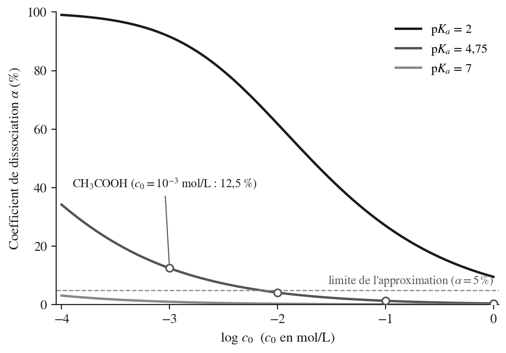
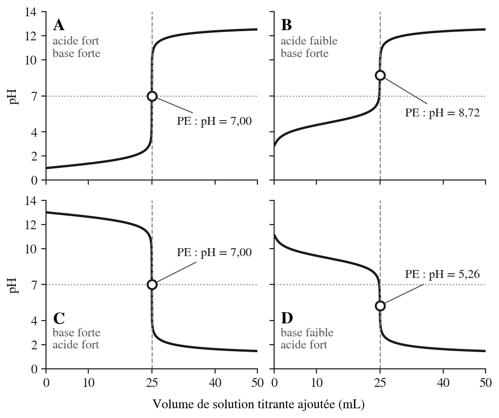
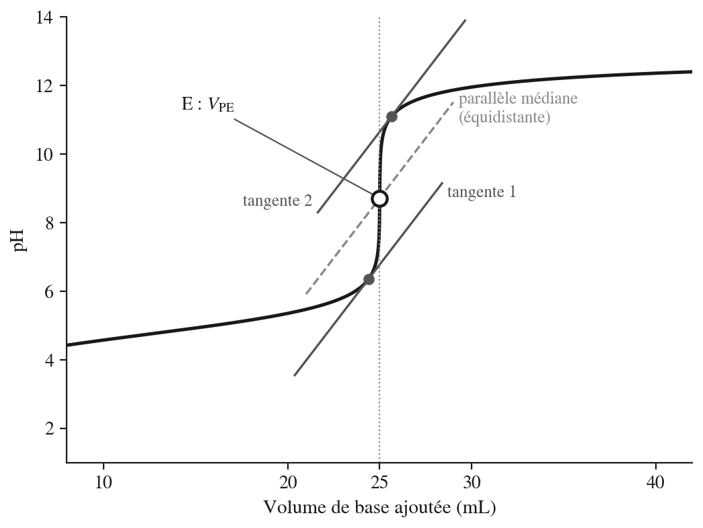
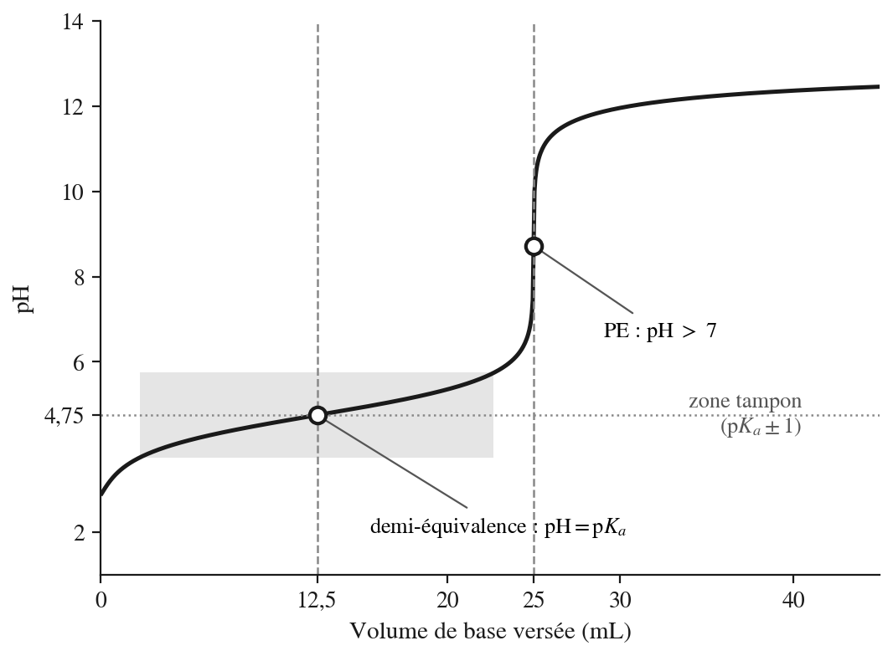
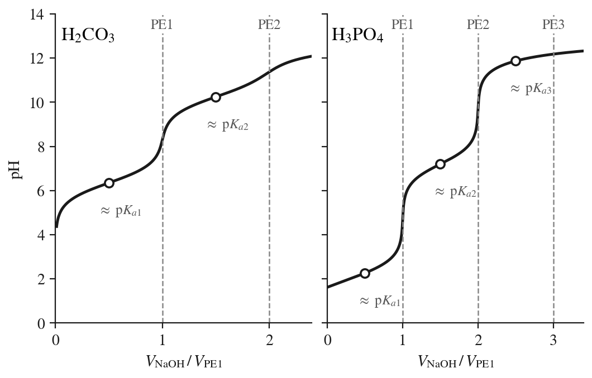

13 Acides, bases et pH
Enseignant·e ? Si vous avez une clé pilote (ou un jeton prof), ouvrez le suivi de votre classe.
Élève ? S’entraîner sur ce chapitre
Une remarque ? Écrivez-nous — coquille, question, suggestion.
13.1 Fiche de démarrage
Ce que nous savons déjà — Nous savons déjà que toute réaction acido-basique est un transfert de proton \(\ce{H+}\) entre un donneur (l’acide) et un accepteur (la base) : c’est le modèle de Brønsted-Lowry vu au chapitre 7. Nous savons également qu’une constante d’équilibre \(K\) mesure la position d’un équilibre (chapitre 11) et que le produit ionique de l’eau, \(K_e = [\ce{H3O+}][\ce{OH-}] = 10^{-14}\) à \(25\ ^\circ\)C, relie toujours les concentrations en ions \(\ce{H3O+}\) et \(\ce{OH-}\) en solution aqueuse.
Ce que ce chapitre construit — Ce chapitre donne une mesure quantitative de la force des acides et des bases, à travers les constantes \(K_a\) et \(K_b\) reliées par \(K_a \cdot K_b = 10^{-14}\). Nous apprendrons à calculer le pH de solutions d’acides ou de bases, forts ou faibles, de solutions de sels et de mélanges d’un acide fort et d’une base forte. Nous exploiterons l’équation de Henderson-Hasselbalch pour les solutions tampons, puis nous analyserons les quatre familles de courbes de titrage pH-métrique. Les indicateurs colorés et les acides polyprotiques, qui cèdent plusieurs protons successivement, complètent le tableau.
Ce que nous saurons faire — À la fin de ce chapitre, nous serons capables de calculer le pH de n’importe quelle solution aqueuse courante — acide fort, acide faible, base forte, base faible, sel, mélange tampon — et de déterminer la concentration d’un acide inconnu à partir d’une courbe de titrage. Nous saurons aussi choisir un indicateur coloré adapté à un titrage donné.
13.2 Rappels avant de commencer
Nous savons déjà que…
- Une réaction acido-basique est un transfert de proton \(\ce{H+}\) d’un acide (donneur) vers une base (accepteur) selon le modèle de Brønsted-Lowry ; en solution aqueuse, ce proton se lie à l’eau pour former \(\ce{H3O+}\).
- Tout acide \(\text{AH}\) forme avec sa base conjuguée \(\text{A}^-\) un couple acide/base \(\text{AH}/\text{A}^-\) ne différant que d’un proton.
- Le produit ionique de l’eau relie toujours les concentrations en ions hydronium et hydroxyde : \(K_e = [\ce{H3O+}][\ce{OH-}] = 10^{-14}\) à \(25\ ^\circ\)C.
- Un acide fort se dissocie totalement dans l’eau ; un acide faible ne se dissocie que partiellement et établit un équilibre.
- Le pH est défini par \(\text{pH} = -\log[\ce{H3O+}]\) ; une solution neutre a un pH de 7 à \(25\ ^\circ\)C.
Ces acquis sont les points d’appui directs de ce chapitre — nous allons les compléter par une mesure quantitative de la force des acides et des bases.
Mini-test — vérifions nos acquis avant de continuer :
- \(\ce{NH4+}\) est-il un acide ou une base selon Brønsted-Lowry ? Quelle est sa base conjuguée ?
- Une solution de \(\ce{HCl}\) 0,10 mol/L a-t-elle un pH inférieur, égal ou supérieur à celui d’une solution de \(\ce{CH3COOH}\) 0,10 mol/L ? Pourquoi ?
- Si \([\ce{OH-}] = 10^{-3}\) mol/L dans une solution aqueuse à \(25\ ^\circ\)C, quelle est la valeur de \([\ce{H3O+}]\) ?
Si nous répondons sans hésiter, nous sommes prêts — passons à la Zone 2. Si certaines réponses hésitent, relisons les points ci-dessus avant de continuer.
13.3 Cours et exercices
13.3.1 Les théories acido-basiques — rappel et extension
Le modèle de Brønsted-Lowry, vu au chapitre 7, définit un acide comme un donneur de proton \(\ce{H+}\) et une base comme un accepteur de proton. Toute réaction acido-basique met en jeu deux couples conjugués \(\text{AH}/\text{A}^-\) et \(\text{BH}^+/\text{B}\). Ce modèle est celui que nous utilisons dans tout ce chapitre. Il existe une théorie plus générale — la théorie de Lewis, qui étend la notion d’acide à tout accepteur de doublet non-liant — mais elle dépasse le cadre de ce cours.
Ce chapitre construit la couche quantitative absente du chapitre 7 : comment mesurer la force d’un acide ou d’une base, et comment calculer le pH de n’importe quelle solution aqueuse.
Convention de notation : comme aux chapitres 11 et 12, les concentrations qui figurent dans les constantes sont rapportées à la concentration de référence \(c^\circ = 1\) mol/L, de sorte que \(K_a\), \(K_b\) et \(K_e\) s’expriment sans unité. Nous écrivons simplement \([\text{X}]\) pour \([\text{X}]/c^\circ\). La lettre \(\alpha\) désigne ici le coefficient de dissociation, à ne pas confondre avec les activités \(\alpha_i\) du chapitre 11. La concentration initiale d’une espèce est notée \(c_0\).
13.3.1.1 FIN DE SECTION 1 — Exercices de consolidation
Exercice 1. Identifiez l’acide, la base et les deux couples conjugués dans \(\ce{HF + H2O <=> F- + H3O+}\).1
Exercice 2. L’ion \(\ce{HSO4-}\) peut-il se comporter à la fois comme acide et comme base ? Donnez les équations correspondantes.2
Exercice 3. Classez les espèces suivantes en acides forts, acides faibles ou bases faibles : \(\ce{HNO3}\), \(\ce{HCN}\), \(\ce{CH3COO-}\), \(\ce{HClO4}\). Justifiez sans calcul.3
Exercice 4. Écrivez l’équation de la réaction acido-basique qui se produit, puis identifiez les deux couples : a) \(\ce{HCl}\) et \(\ce{H2O}\) ; b) \(\ce{CH3COO-}\) et \(\ce{H3O+}\) ; c) \(\ce{H2CO3}\) et \(\ce{OH-}\) ; d) \(\ce{NH3}\) et \(\ce{H2O}\).4
Exercice 5. Donnez la base conjuguée de \(\ce{HSO4-}\), \(\ce{H2S}\) et \(\ce{NH4+}\), puis l’acide conjugué de \(\ce{HCOO-}\), \(\ce{HPO4^{2-}}\) et \(\ce{NH3}\).5
13.3.2 Le produit ionique de l’eau \(K_e\) et l’amphotérisme
Conception courante : on imagine souvent que l’eau pure est parfaitement neutre et inerte — qu’elle ne réagit pas avec elle-même. C’est presque vrai, mais pas tout à fait : une infime fraction des molécules d’eau réagit spontanément entre elles en permanence.
Au niveau particulaire : deux molécules d’eau peuvent échanger un proton entre elles selon la réaction d’autoprotolyse :
\[\ce{2 H2O <=> H3O+ + OH-}\]
Cet équilibre est très déplacé vers la gauche — la quasi-totalité de l’eau reste sous forme moléculaire — mais il produit en permanence de petites quantités de \(\ce{H3O+}\) et de \(\ce{OH-}\).
Au niveau symbolique : la constante d’équilibre associée est le produit ionique de l’eau, noté \(K_e\) (ou \(K_w\)) :
\[K_e = [\ce{H3O+}][\ce{OH-}] = 1{,}0 \times 10^{-14} \quad \text{à } 25\ ^\circ\text{C}\]
Cette relation est toujours vraie en solution aqueuse à 25 \(^\circ\)C, que la solution soit pure, acide ou basique. Elle permet de calculer \([\ce{OH-}]\) dès que \([\ce{H3O+}]\) est connu, et vice-versa. Dans l’eau pure, \([\ce{H3O+}] = [\ce{OH-}] = 10^{-7}\) mol/L ; si l’on ajoute une base, \([\ce{OH-}]\) augmente et \([\ce{H3O+}]\) diminue dans la même proportion, de sorte que le produit reste égal à \(10^{-14}\).
L’eau peut donc agir comme acide ou comme base selon son partenaire réactionnel : c’est un amphotère. Le tableau suivant résume les constantes associées à ces deux comportements :
| Espèce | Rôle | Réaction | Constante | Valeur à 25 \(^\circ\)C |
|---|---|---|---|---|
| \(\ce{H2O}\) | Acide | \(\ce{H2O + H2O <=> OH- + H3O+}\) | \(K_a(\ce{H2O})\) | \(1{,}8 \times 10^{-16}\) |
| \(\ce{H2O}\) | Base | \(\ce{H2O + H2O <=> H3O+ + OH-}\) | \(K_b(\ce{H2O})\) | \(1{,}8 \times 10^{-16}\) |
| \(\ce{H3O+}\) | Acide | \(\ce{H3O+ + H2O <=> H2O + H3O+}\) | \(K_a(\ce{H3O+})\) | \(55{,}5\) |
| \(\ce{OH-}\) | Base | \(\ce{OH- + H2O <=> H2O + OH-}\) | \(K_b(\ce{OH-})\) | \(55{,}5\) |
| Eau (autoprotolyse) | — | \(\ce{2 H2O <=> H3O+ + OH-}\) | \(K_e\) | \(1{,}0 \times 10^{-14}\) |
Attention : les valeurs de \(K_a(\ce{H2O})\) et \(K_b(\ce{H2O})\) semblent surprenantes. Elles sont obtenues en divisant \(K_e\) par la concentration de l’eau, \([\ce{H2O}] = 55{,}5\) mol/L, tandis que \(K_a(\ce{H3O+})\) et \(K_b(\ce{OH-})\) valent \(55{,}5\). Ce sont des valeurs formelles : le solvant est lui-même l’acide ou la base du couple, et l’on convient de les calculer avec \([\ce{H2O}] = 55{,}5\) mol/L, alors que dans l’expression d’une constante d’équilibre habituelle (chapitre 11), l’activité du solvant vaut 1. Elles servent surtout à situer l’eau sur l’échelle des p\(K_a\) (\(-1{,}74\) pour \(\ce{H3O+}\), \(15{,}74\) pour \(\ce{H2O}\)).
dans une solution aqueuse à 25 \(^\circ\)C contenant \([\ce{H3O+}] = 0{,}10\) mol/L, calculez \([\ce{OH-}]\).
Indication : utilisez directement \(K_e = [\ce{H3O+}][\ce{OH-}]\).6
13.3.2.1 FIN DE SECTION 2 — Exercices de consolidation
Exercice 6. Une solution a un pH de 3,50 à 25 \(^\circ\)C. Calculez \([\ce{H3O+}]\) et \([\ce{OH-}]\).7
Exercice 7. Une solution de \(\ce{NaOH}\) présente \([\ce{OH-}] = 2{,}5 \times 10^{-3}\) mol/L. Calculez son pH.8
Exercice 8. L’eau pure à 60 \(^\circ\)C a un \(K_e = 9{,}6 \times 10^{-14}\). Calculez le pH de neutralité à cette température. Est-il égal à 7 ? Pourquoi ?9
Exercice 9. Dans l’eau pure à 25 \(^\circ\)C, on dissout de l’hydroxyde de sodium jusqu’à obtenir \([\ce{OH-}] = 0{,}10\) mol/L. Que valent alors \([\ce{H3O+}]\) et le pH ? Quelle est la valeur du produit \([\ce{H3O+}][\ce{OH-}]\) ?10
Exercice 10. Une solution aqueuse a \([\ce{H3O+}] = 4{,}0 \times 10^{-9}\) mol/L. Est-elle acide, neutre ou basique ? Calculez \([\ce{OH-}]\) et le pH.11
13.3.3 La constante d’acidité \(K_a\) et le p\(K_a\)
Conception courante : on confond souvent “acide” et “acide fort” — comme si tout acide se dissociait totalement dans l’eau. Or la grande majorité des acides rencontrés en chimie organique et en biologie sont des acides faibles : ils ne se dissocient que partiellement, et leur comportement est gouverné par un équilibre.
Au niveau macroscopique : on observe expérimentalement qu’à concentration égale, une solution d’acide acétique \(\ce{CH3COOH}\) conduit l’électricité moins bien qu’une solution d’acide chlorhydrique \(\ce{HCl}\) — preuve que \(\ce{CH3COOH}\) produit moins d’ions en solution. La force d’un acide se mesure donc par sa capacité à se dissocier.
Au niveau particulaire : pour un acide \(\text{AH}\) en solution aqueuse, l’équilibre de dissociation s’écrit :
\[\text{AH} + \ce{H2O} \rightleftharpoons \text{A}^- + \ce{H3O+}\]
Plus cet équilibre est déplacé vers la droite, plus l’acide est fort.
Au niveau symbolique : la constante d’équilibre associée est la constante d’acidité \(K_a\) :
\[K_a = \frac{[\text{A}^-][\ce{H3O+}]}{[\text{AH}]}\]
Plus \(K_a\) est grand, plus l’acide est fort. Comme les valeurs de \(K_a\) varient sur de nombreux ordres de grandeur, on utilise l’échelle logarithmique inversée :
\[\text{p}K_a = -\log(K_a)\]
Attention : l’échelle des p\(K_a\) varie en sens opposé de celle des \(K_a\) — un p\(K_a\) élevé correspond à un acide faible.
Quelques exemples emblématiques :
| Acide | Réaction | \(K_a\) | p\(K_a\) | Force |
|---|---|---|---|---|
| \(\ce{HCl}\) | \(\ce{HCl + H2O -> Cl- + H3O+}\) | \(\sim 10^{7}\) | \(-7\) | Très fort |
| \(\ce{CH3COOH}\) | \(\ce{CH3COOH + H2O <=> CH3COO- + H3O+}\) | \(1{,}78 \times 10^{-5}\) | \(4{,}75\) | Faible |
| \(\ce{NH4+}\) | \(\ce{NH4+ + H2O <=> NH3 + H3O+}\) | \(6{,}0 \times 10^{-10}\) | \(9{,}22\) | Très faible |
| \(\ce{H2O}\) | \(\ce{H2O + H2O <=> OH- + H3O+}\) | \(1{,}8 \times 10^{-16}\) | \(15{,}74\) | Négligeable |
Graduation de la force des acides. Les p\(K_a\) de la table de l’annexe (voir Constantes d’acidité) permettent de répartir les acides en cinq classes. Les bornes ci-dessous sont indicatives ; elles résument la répartition de la table.
| Classe | p\(K_a\) (indicatif) | Exemples | Base conjuguée |
|---|---|---|---|
| Acides très forts | \(< -3\) | \(\ce{HClO4}\), \(\ce{HI}\), \(\ce{HBr}\), \(\ce{HCl}\) | négligeable |
| Acides forts | \(-3\) à \(-1\) | \(\ce{HNO3}\), \(\ce{H3O+}\), \(\ce{H2SO4}\) | négligeable |
| Acides faibles | \(-1\) à \(\sim 7\) | \(\ce{H3PO4}\), \(\ce{HF}\), \(\ce{CH3COOH}\), \(\ce{H2CO3}\) | très faible |
| Acides très faibles | \(\sim 7\) à \(14\) | \(\ce{NH4+}\), \(\ce{HCN}\), \(\ce{HCO3-}\) | faible |
| Acides négligeables | \(> 14\) | \(\ce{H2O}\), \(\ce{OH-}\) | forte |
Un acide est dit fort si son p\(K_a \lesssim -1\) : à 1 mol/L, plus de 96 % des molécules sont dissociées (96,3 % pour \(\ce{HNO3}\), p\(K_a = -1{,}4\)). La valeur \(-1{,}74\), p\(K_a\) du cation hydronium \(\ce{H3O+}\), est la limite de nivellement : aucun acide plus fort que \(\ce{H3O+}\) ne subsiste dans l’eau, il se dissocie totalement en \(\ce{H3O+}\). Les acides de p\(K_a\) supérieur à \(-1\) sont faibles : ils ne se dissocient que partiellement et leur comportement est gouverné par un équilibre. Cette graduation est établie par extrapolation pour les acides très forts : leur p\(K_a\) ne peut pas être mesuré directement dans l’eau, mais seulement dans des solvants moins basiques.
le p\(K_a\) de l’acide fluorhydrique \(\ce{HF}\) est 3,17. Écrivez son équilibre de dissociation dans l’eau et calculez son \(K_a\).12
13.3.3.1 FIN DE SECTION 3 — Exercices de consolidation
Exercice 11. L’acide nitreux \(\ce{HNO2}\) a un p\(K_a = 3{,}2\). Calculez son \(K_a\) et écrivez son équilibre de dissociation dans l’eau.13
Exercice 12. Classez les acides suivants du plus fort au plus faible : \(\ce{HF}\) (p\(K_a = 3{,}17\)), \(\ce{CH3COOH}\) (p\(K_a = 4{,}75\)), \(\ce{HCN}\) (p\(K_a = 9{,}22\)), \(\ce{H2CO3}\) (p\(K_{a1} = 6{,}35\)).14
Exercice 13. L’acide lactique \(\ce{CH3CHOHCOOH}\) a \(K_a = 8{,}4 \times 10^{-4}\). Calculez son p\(K_a\) et dites s’il est plus fort ou plus faible que l’acide acétique.15
Exercice 14. À l’aide de la table de l’annexe, placez chacun des acides suivants dans sa classe de force : \(\ce{HI}\), \(\ce{H3PO4}\), \(\ce{HCN}\), \(\ce{H2O}\), \(\ce{HNO3}\), \(\ce{CH3COOH}\).16
Exercice 15. Un acide \(\text{HA}\) a \(K_a = 2{,}5 \times 10^{-6}\). Calculez son p\(K_a\) et situez-le par rapport à \(\ce{CH3COOH}\) et à \(\ce{H2CO3}\).17
13.3.4 La constante de basicité \(K_b\) et la relation \(K_a \cdot K_b = K_e\)
Conception courante : on cherche souvent la force d’une base dans des tables de \(K_b\), mais ces valeurs sont rarement tabulées. Il existe une relation directe entre la force d’une base et la force de son acide conjugué — ce qui rend les tables de \(K_a\) suffisantes pour tout calculer.
Au niveau particulaire : une base \(\text{B}\) en solution aqueuse capte un proton de l’eau selon l’équilibre :
\[\text{B} + \ce{H2O} \rightleftharpoons \text{BH}^+ + \ce{OH-}\]
Au niveau symbolique : la constante associée est la constante de basicité \(K_b\) :
\[K_b = \frac{[\text{BH}^+][\ce{OH-}]}{[\text{B}]}\]
Et de même : \(\text{p}K_b = -\log(K_b)\).
La relation fondamentale entre \(K_a\) et \(K_b\) d’un couple conjugué se démontre en multipliant les deux expressions :
\[K_a \cdot K_b = \frac{[\text{A}^-][\ce{H3O+}]}{[\text{AH}]} \cdot \frac{[\text{AH}][\ce{OH-}]}{[\text{A}^-]} = [\ce{H3O+}][\ce{OH-}] = K_e\]
Donc :
\[\boxed{K_a \cdot K_b = K_e = 10^{-14}} \qquad \text{soit} \qquad \text{p}K_a + \text{p}K_b = 14\]
Conséquence directe : si un acide est fort (\(K_a\) grand, p\(K_a\) petit), sa base conjuguée est nécessairement faible (\(K_b\) petit, p\(K_b\) grand) — et inversement. Un acide fort n’a pas de base conjuguée efficace en solution aqueuse.
calculez \(K_b\) et p\(K_b\) de l’ion acétate \(\ce{CH3COO-}\), sachant que p\(K_a(\ce{CH3COOH}) = 4{,}75\).
Solution :
\[\text{p}K_b(\ce{CH3COO-}) = 14 - \text{p}K_a(\ce{CH3COOH}) = 14 - 4{,}75 = 9{,}25\]
\[K_b(\ce{CH3COO-}) = 10^{-9{,}25} = 5{,}6 \times 10^{-10}\]
L’ion acétate est donc une base très faible — ce qui est cohérent avec le fait que l’acide acétique est un acide faible mais non négligeable.
le p\(K_a(\ce{NH4+}) = 9{,}22\). Calculez \(K_b\) et p\(K_b\) de l’ammoniac \(\ce{NH3}\).18
13.3.4.1 FIN DE SECTION 4 — Exercices de consolidation
Exercice 16. Le p\(K_a\) de l’acide hypochloreux \(\ce{HClO}\) est 7,5. Calculez p\(K_b\) et \(K_b\) de l’ion hypochlorite \(\ce{ClO-}\).19
Exercice 17. L’ion benzoate \(\ce{C6H5COO-}\) a p\(K_b = 9{,}81\). Calculez p\(K_a\) de l’acide benzoïque \(\ce{C6H5COOH}\).20
Exercice 18. Une base a \(K_b = 5{,}0 \times 10^{-5}\). Son acide conjugué est-il un acide fort ou un acide faible ? Calculez son p\(K_a\).21
Exercice 19. Parmi les bases \(\ce{F-}\), \(\ce{CN-}\), \(\ce{CH3COO-}\) et \(\ce{NO3-}\), laquelle est la plus forte ? Justifiez à l’aide de la table de l’annexe, puis donnez son p\(K_b\).22
Exercice 20. Calculez \(K_b\) de l’ion carbonate \(\ce{CO3^{2-}}\) sachant que le p\(K_a\) du couple \(\ce{HCO3-}/\ce{CO3^{2-}}\) vaut 10,25.23
13.3.5 Calculs de pH : acides et bases forts
Conception courante : on croit parfois que le calcul du pH d’une solution d’acide fort nécessite un tableau d’avancement à l’équilibre. Ce n’est pas le cas : la dissociation étant totale, le calcul se réduit à une simple lecture de concentration.
Au niveau macroscopique : une solution d’acide fort est très conductrice et réagit vigoureusement avec les métaux — signes d’une forte concentration en \(\ce{H3O+}\).
Au niveau particulaire : pour un monoacide fort \(\ce{HA}\), la dissociation est totale et irréversible :
\[\ce{HA + H2O -> A- + H3O+}\]
Toutes les molécules \(\ce{HA}\) initiales sont converties en \(\ce{H3O+}\) : \([\ce{H3O+}] = c_0\).
Au niveau symbolique :
\[\boxed{\text{pH} = -\log c_0} \quad \text{(monoacide fort)}\]
Cette formule suppose \(c_0 \gtrsim 10^{-6}\) mol/L : en dessous, l’autoprotolyse de l’eau n’est plus négligeable (une solution de \(\ce{HCl}\) à \(10^{-8}\) mol/L a un pH de 6,98, et non de 8).
Pour une base forte monohydroxyde \(\ce{MOH}\) (ex. \(\ce{NaOH}\), \(\ce{KOH}\)) :
\[\text{pOH} = -\log c_0 \qquad \text{puis} \qquad \text{pH} = 14 - \text{pOH}\]
Dans l’histoire… En 1909, au laboratoire de la brasserie Carlsberg à Copenhague, le chimiste danois Søren Sørensen étudie l’influence de l’acidité sur l’activité des enzymes. Pour ne pas écrire à chaque fois des concentrations en ions hydrogène aussi petites que \(10^{-7}\) mol/L, il ne retient que l’exposant, changé de signe : le pH est né. Sa définition portait alors sur la concentration ; celle que nous utilisons aujourd’hui, fondée sur l’activité, est proposée dès 1924.
Pour un dihydroxyde \(\ce{M(OH)2}\) (ex. \(\ce{Ba(OH)2}\), \(\ce{Ca(OH)2}\)), la concentration en \(\ce{OH-}\) est le double de la concentration initiale : \([\ce{OH-}] = 2 c_0\).
calculez le pH d’une solution de \(\ce{NaOH}\) 0,050 mol/L.
Solution :
\[\text{pOH} = -\log(0{,}050) = 1{,}30 \qquad \Rightarrow \qquad \text{pH} = 14 - 1{,}30 = 12{,}70\]
calculez le pH d’une solution de \(\ce{HCl}\) 0,10 mol/L, puis d’une solution de \(\ce{Ca(OH)2}\) 0,015 mol/L.
Indication : pour \(\ce{Ca(OH)2}\), pensez à doubler la concentration avant de calculer le pOH.24
13.3.5.1 FIN DE SECTION 5 — Exercices de consolidation
Exercice 21. Calculez le pH d’une solution de \(\ce{HNO3}\) 0,025 mol/L.25
Exercice 22. Calculez le pH d’une solution de \(\ce{HCl}\) à \(2{,}0 \times 10^{-7}\) mol/L. Pourquoi la formule \(\text{pH} = -\log c_0\) ne convient-elle pas ?26
Exercice 23. On mélange 50,0 mL de \(\ce{HCl}\) 0,10 mol/L et 30,0 mL de \(\ce{NaOH}\) 0,10 mol/L. Calculez le pH du mélange.27
Exercice 24. a) Calculez le pH d’une solution de \(\ce{HCl}\) de concentration \(3{,}2 \times 10^{-3}\) mol/L. b) Une solution a un pH de 5,4 : calculez \([\ce{H3O+}]\). c) Une solution de \(\ce{NaOH}\) a un pH de 12,0 : calculez sa concentration.28
Exercice 25. On dissout 1,4 g de \(\ce{NaOH}\) (\(M = 40{,}00\) g/mol) dans de l’eau pour obtenir 70,0 mL de solution. Calculez son pH. On ajoute ensuite de l’eau jusqu’à un volume total de 770 mL : quel est le nouveau pH ?29
Exercice 26. Une solution de \(\ce{Ba(OH)2}\) a un pH de 12,00. Calculez sa concentration molaire et sa concentration massique (\(M = 171{,}3\) g/mol).30
13.3.6 Mélanges d’un acide fort et d’une base forte
Conception courante : on croit parfois que mélanger un acide et une base donne toujours une solution neutre. Le résultat dépend des quantités de matière : l’espèce qui est en excès impose le pH.
Au niveau particulaire : un acide fort et une base forte réagissent de façon totale :
\[\ce{H3O+ + OH- -> 2 H2O}\]
Cette réaction est quasi complète parce que sa constante d’équilibre vaut \(1/K_e = 10^{14}\) (voir le chapitre 11 : une constante aussi grande correspond à une réaction totale).
Au niveau symbolique : la méthode comporte trois étapes.
- Calculer les quantités de matière : \(n(\ce{H3O+}) = c_A V_A\) et \(n(\ce{OH-}) = c_B V_B\) (en tenant compte de l’indice du dihydroxyde le cas échéant).
- Comparer : l’espèce en défaut est entièrement consommée, il reste \(|n(\ce{H3O+}) - n(\ce{OH-})|\) de l’autre.
- Diviser par le volume total \(V_A + V_B\) et calculer le pH.
Trois cas se présentent : excès d’acide (\(\text{pH} = -\log[\ce{H3O+}]_\text{excès}\)), excès de base (\(\text{pOH} = -\log[\ce{OH-}]_\text{excès}\) puis \(\text{pH} = 14 - \text{pOH}\)), ou quantités égales (équivalence, pH = 7 à 25 \(^\circ\)C).
on mélange 25,0 mL de \(\ce{HNO3}\) 0,20 mol/L et 15,0 mL de \(\ce{KOH}\) 0,10 mol/L.
\[n(\ce{H3O+}) = 0{,}0250 \times 0{,}20 = 5{,}0 \times 10^{-3}\ \text{mol}\]
\[n(\ce{OH-}) = 0{,}0150 \times 0{,}10 = 1{,}5 \times 10^{-3}\ \text{mol}\]
Il reste \(3{,}5 \times 10^{-3}\) mol de \(\ce{H3O+}\) dans 40,0 mL : \([\ce{H3O+}] = 0{,}0875\) mol/L, soit \(\text{pH} = 1{,}06\).
13.3.6.1 FIN DE SECTION 6 — Exercices de consolidation
Exercice 27. On mélange 20,0 mL de \(\ce{HCl}\) 0,10 mol/L et 50,0 mL de \(\ce{NaOH}\) 0,060 mol/L. Quelle espèce est en excès ? Calculez le pH.31
Exercice 28. On mélange 30,0 mL de \(\ce{HCl}\) 0,10 mol/L et 20,0 mL de \(\ce{NaOH}\) 0,15 mol/L. Calculez le pH. Que peut-on dire des quantités de matière mises en jeu ?32
Exercice 29. Quelle masse de \(\ce{NaOH}\) solide (\(M = 40{,}00\) g/mol) faut-il ajouter à 25,0 mL de \(\ce{HNO3}\) 0,20 mol/L pour atteindre exactement la neutralité (on néglige la variation de volume) ?33
Exercice 30. On mélange 40,0 mL de \(\ce{Ba(OH)2}\) 0,025 mol/L et 60,0 mL de \(\ce{HCl}\) 0,050 mol/L. Calculez le pH du mélange.34
Exercice 31. On mélange 250 mL de \(\ce{HNO3}\) 0,20 mol/L avec 3,0 g de \(\ce{NaOH}\) en pastilles (\(M = 40{,}00\) g/mol). Écrivez la réaction de neutralisation, puis calculez \([\ce{H3O+}]\) et \([\ce{OH-}]\) de la solution finale (variation de volume négligée).35
Exercice 32. Une solution de 150 mL de \(\ce{Ba(OH)2}\) est neutralisée par 250 mL de \(\ce{HCl}\) 0,10 mol/L. Écrivez l’équation de neutralisation, puis calculez la concentration de la solution de \(\ce{Ba(OH)2}\) et la masse de base utilisée (\(M = 171{,}34\) g/mol).36
Exercice 33. On dissout 1,225 g d’acide sulfurique pur \(\ce{H2SO4}\) (\(M = 98{,}08\) g/mol) dans 100 mL d’eau. Écrivez la réaction de neutralisation par \(\ce{NaOH}\), puis calculez le volume de \(\ce{NaOH}\) 0,100 mol/L nécessaire pour neutraliser la solution.37
Exercice 34. On neutralise 20,0 mL de solution de \(\ce{Ba(OH)2}\) par 12,5 mL de \(\ce{HCl}\) 0,100 mol/L. Écrivez l’équation moléculaire et l’équation ionique, puis calculez la concentration de la solution de \(\ce{Ba(OH)2}\) en mol/L et en g/L.38
Exercice 35. Calculez le volume de solution de \(\ce{Ca(OH)2}\) 0,0200 mol/L nécessaire pour titrer : a) 25,0 mL de \(\ce{HBr}\) 0,0500 mol/L ; b) 25,0 mL de \(\ce{CH3COOH}\) 0,0450 mol/L. Écrivez chaque réaction de neutralisation.39
13.3.7 Calculs de pH : acides et bases faibles
Conception courante : on applique parfois la formule \(\text{pH} = -\log c_0\) à un acide faible — comme si la dissociation était totale. C’est la même erreur que de confondre acide et acide fort : pour un acide faible, seule une fraction des molécules se dissocie, et la concentration en \(\ce{H3O+}\) à l’équilibre est bien inférieure à \(c_0\).
Au niveau particulaire : pour un acide faible \(\text{AH}\) de concentration initiale \(c_0\), l’équilibre s’établit :
\[\text{AH} + \ce{H2O} \rightleftharpoons \text{A}^- + \ce{H3O+}\]
On pose \(x = [\ce{H3O+}]_\text{éq} = [\text{A}^-]_\text{éq}\), et \([\text{AH}]_\text{éq} = c_0 - x\). (Nous négligeons l’autoprotolyse de l’eau, légitime tant que \(c_0 \gtrsim 10^{-6}\) mol/L.)
Au niveau symbolique : l’expression de \(K_a\) donne :
\[K_a = \frac{x \cdot x}{c_0 - x} = \frac{x^2}{c_0 - x}\]
Sans approximation, on résout l’équation du second degré :
\[x^2 + K_a \cdot x - K_a \cdot c_0 = 0 \qquad \Rightarrow \qquad x = \frac{-K_a + \sqrt{K_a^2 + 4 K_a c_0}}{2}\]
Avec approximation (valable si \(\alpha = x/c_0 \leq 5\,\%\)) : on pose \(c_0 - x \approx c_0\), ce qui donne :
\[[\ce{H3O+}] \approx \sqrt{K_a \cdot c_0} \qquad \Rightarrow \qquad \boxed{\text{pH} \approx \frac{1}{2}(\text{p}K_a - \log c_0)}\]
Le coefficient de dissociation \(\alpha\) mesure la fraction d’acide dissociée :
\[\alpha = \frac{[\text{A}^-]_\text{éq}}{c_0} = \frac{x}{c_0}\]
Attention : \(\alpha\) dépend à la fois de \(K_a\) et de \(c_0\). Un acide faible se dissocie davantage lorsqu’il est dilué — conséquence directe du principe de Le Châtelier : diluer déplace l’équilibre dans le sens de la dissociation.
calculez le pH d’une solution de \(\ce{CH3COOH}\) 0,10 mol/L (\(\text{p}K_a = 4{,}75\)).
Solution avec approximation :
\[[\ce{H3O+}] \approx \sqrt{1{,}78 \times 10^{-5} \times 0{,}10} = \sqrt{1{,}78 \times 10^{-6}} = 1{,}33 \times 10^{-3}\ \text{mol/L}\]
\[\alpha = \frac{1{,}33 \times 10^{-3}}{0{,}10} = 1{,}33\,\% < 5\,\% \quad \text{(approximation valide)}\]
\[\text{pH} = -\log(1{,}33 \times 10^{-3}) = 2{,}88\]
calculez le pH d’une solution de \(\ce{NH3}\) 0,10 mol/L (\(\text{p}K_b = 4{,}78\)).
Solution : on travaille avec \(K_b\) et \([\ce{OH-}]\) :
\[[\ce{OH-}] \approx \sqrt{K_b \cdot c_0} = \sqrt{1{,}66 \times 10^{-5} \times 0{,}10} = 1{,}29 \times 10^{-3}\ \text{mol/L}\]
\[\text{pOH} = -\log(1{,}29 \times 10^{-3}) = 2{,}89 \qquad \Rightarrow \qquad \text{pH} = 14 - 2{,}89 = 11{,}11\]
Pour les bases faibles, la formule approchée est :
\[\boxed{\text{pH} \approx \frac{1}{2}(14 + \text{p}K_a + \log c_0)}\]
où p\(K_a\) désigne l’acide conjugué de la base. La condition de validité est la même : \(\alpha = [\ce{OH-}]/c_0 \leq 5\,\%\).
calculez le pH d’une solution de \(\ce{HCOOH}\) 0,10 mol/L (\(\text{p}K_a = 3{,}75\)). Vérifiez que l’approximation est valable.40
13.3.7.1 FIN DE SECTION 7 — Exercices de consolidation
Exercice 36. Calculez le pH d’une solution de \(\ce{CH3COOH}\) 0,050 mol/L (p\(K_a = 4{,}75\)). Vérifiez la validité de l’approximation.41
Exercice 37. Calculez le pH d’une solution de \(\ce{NH3}\) 0,050 mol/L (p\(K_b = 4{,}78\)).42
Exercice 38. L’acide propanoïque \(\ce{C2H5COOH}\) a p\(K_a = 4{,}87\). Quelle concentration \(c_0\) de cet acide donne un pH de 3,00 ? Vérifiez que l’approximation est valide.43
Exercice 39. Classez par pH croissant des solutions 0,10 mol/L de \(\ce{HCl}\), \(\ce{CH3COOH}\), \(\ce{NH3}\) et \(\ce{NaOH}\), sans calcul précis, puis vérifiez en calculant le pH des deux solutions de composés faibles.44
Exercice 40. Calculez le pH d’une solution d’acide cyanhydrique \(\ce{HCN}\) 0,20 mol/L (p\(K_a = 9{,}22\)) avec l’approximation de l’acide faible peu dissocié, puis vérifiez que cette approximation est valable.45
Exercice 41. Calculez le pH d’une solution d’acide chloreux \(\ce{HClO2}\) 0,12 mol/L (p\(K_a = 1{,}95\)) : a) avec l’approximation de l’acide faible peu dissocié ; b) sans cette approximation. Comparez et concluez.46
13.3.8 Composition d’une solution d’acide ou de base faible
Au niveau particulaire : une fois \(x\) connu, on dispose de la concentration de toutes les espèces en solution. Pour \(\ce{CH3COOH}\) 0,10 mol/L (résolution exacte, \(K_a = 1{,}78 \times 10^{-5}\)) :
| Espèce | \(\text{CH}_3\text{COOH}\) | \(\text{CH}_3\text{COO}^-\) | \(\ce{H3O+}\) | \(\ce{OH-}\) |
|---|---|---|---|---|
| Concentration (mol/L) | \(9{,}87 \times 10^{-2}\) | \(1{,}32 \times 10^{-3}\) | \(1{,}32 \times 10^{-3}\) | \(7{,}5 \times 10^{-12}\) |
La quasi-totalité de l’acide reste sous forme moléculaire ; \([\ce{OH-}]\) se déduit de \(K_e\). La relation \(K_a = c_0 \alpha^2/(1 - \alpha)\) permet de passer de \(\alpha\) à \(K_a\) et inversement.
Influence de \(c_0\) et de \(K_a\) sur \(\alpha\) : le coefficient de dissociation augmente quand la solution est diluée ou quand l’acide est plus fort.
| \(c_0\) (mol/L), \(\text{p}K_a = 4{,}75\) | 1 | 0,1 | 0,01 | 0,001 |
|---|---|---|---|---|
| \(\alpha\) (%) | 0,42 | 1,3 | 4,1 | 12,5 |
| p\(K_a\) (\(c_0 = 0{,}10\) mol/L) | 2 | 3 | 4 | 5 | 6 |
|---|---|---|---|---|---|
| \(\alpha\) (%) | 27,0 | 9,5 | 3,1 | 1,0 | 0,32 |
À 0,001 mol/L, \(\alpha\) dépasse 5 % pour l’acide acétique : l’approximation n’est plus valable et il faut résoudre l’équation du second degré.

calculez le pH de \(\ce{CH3COOH}\) 0,0010 mol/L.
Solution : avec l’approximation, \(x \approx \sqrt{1{,}78 \times 10^{-5} \times 1{,}0 \times 10^{-3}} = 1{,}33 \times 10^{-4}\) mol/L, soit \(\alpha = 13\,\% > 5\,\%\) : l’approximation n’est pas valide. On résout donc \(x^2 + K_a x - K_a c_0 = 0\) : \(x = 1{,}25 \times 10^{-4}\) mol/L, \(\alpha = 12{,}5\,\%\) et \(\text{pH} = 3{,}90\) (la formule approchée aurait donné 3,88).
13.3.8.1 FIN DE SECTION 8 — Exercices de consolidation
Exercice 42. On dissout 0,060 g d’acide acétique (\(M = 60{,}05\) g/mol) dans l’eau pour obtenir 50,0 mL de solution. Calculez les concentrations de \(\ce{CH3COOH}\), \(\ce{CH3COO-}\), \(\ce{H3O+}\) et \(\ce{OH-}\) à l’équilibre, ainsi que le pH et \(\alpha\) (p\(K_a = 4{,}75\)).47
Exercice 43. Une solution d’acide méthanoïque \(\ce{HCOOH}\) (p\(K_a = 3{,}75\)) a un pH de 3,26. Calculez sa concentration initiale. L’approximation \(c_0 - x \approx c_0\) est-elle justifiée ?48
Exercice 44. Calculez le coefficient de dissociation de l’acide fluorhydrique \(\ce{HF}\) (p\(K_a = 3{,}17\)) à 0,6 mol/L, puis à 0,08 mol/L. Commentez.49
Exercice 45. Une solution d’un monoacide faible \(\text{AH}\) à 0,10 mol/L a un coefficient de dissociation de 14 %. Calculez \(K_a\) et p\(K_a\).50
Exercice 46. À quelle concentration \(c_0\) l’acide acétique est-il dissocié à 10 % ? Utilisez \(K_a = c_0\alpha^2/(1-\alpha)\).51
13.3.9 Le pH d’une solution de sel : l’hydrolyse
Conception courante : on croit souvent qu’un sel dissous donne une solution neutre, puisque l’acide et la base qui l’ont formé « se sont neutralisés ». C’est faux dès qu’un des deux était faible : au point d’équivalence d’un titrage, le pH n’est pas 7 précisément à cause de cela.
Au niveau particulaire : un sel \(\text{MA}\) (cation \(\text{M}^+\), anion \(\text{A}^-\)) se dissocie totalement dans l’eau. Chaque ion se comporte ensuite selon l’acide ou la base dont il provient :
- un ion issu d’un acide ou d’une base forts (\(\ce{Na+}\), \(\ce{K+}\), \(\ce{Cl-}\), \(\ce{Br-}\), \(\ce{NO3-}\)) est spectateur : il n’a aucune action sur le pH ;
- l’anion d’un acide faible (\(\ce{CH3COO-}\), \(\ce{CN-}\), \(\ce{F-}\)) est une base faible : il capte des protons à l’eau et la solution devient basique ;
- le cation d’une base faible (\(\ce{NH4+}\)) est un acide faible : il cède des protons à l’eau et la solution devient acide.
Cette réaction d’un ion avec l’eau s’appelle l’hydrolyse. On la traite exactement comme le pH d’une base faible ou d’un acide faible, avec la concentration du sel.
Au niveau symbolique :
| Sel | Ions | Caractère de la solution | pH (concentration \(c_0\)) |
|---|---|---|---|
| \(\ce{NaCl}\), \(\ce{KNO3}\) | spectateurs | neutre | \(7\) |
| \(\ce{CH3COONa}\), \(\ce{KCN}\), \(\ce{NaF}\) | anion d’un acide faible | basique | \(\frac{1}{2}(14 + \text{p}K_a + \log c_0)\) |
| \(\ce{NH4Cl}\), \(\ce{NH4Br}\) | cation d’une base faible | acide | \(\frac{1}{2}(\text{p}K_a - \log c_0)\) |
| \(\ce{NH4CH3COO}\) | les deux | voisin de 7 | \(\frac{1}{2}(\text{p}K_{a1} + \text{p}K_{a2})\) |
Dans la formule du cation acide, p\(K_a\) est celui du cation (\(\ce{NH4+}\) : 9,22) ; dans celle de l’anion basique, p\(K_a\) est celui de l’acide conjugué de l’anion.
calculez le pH d’une solution de \(\ce{NH4Cl}\) 0,10 mol/L.
Solution : \(\ce{Cl-}\) est spectateur ; \(\ce{NH4+}\) est un acide faible (p\(K_a = 9{,}22\)) :
\[\text{pH} = \frac{1}{2}(9{,}22 - \log 0{,}10) = \frac{1}{2}(9{,}22 + 1{,}00) = 5{,}11\]
C’est la même méthode que pour le point d’équivalence du titrage de \(\ce{NH3}\) par \(\ce{HCl}\) (voir la section suivante) : la solution obtenue à l’équivalence est une solution de sel, mais diluée par le titrant (pour \(\ce{NH4+}\) à 0,050 mol/L, le pH vaut 5,26).
prévoyez si la solution de chacun des sels suivants est acide, neutre ou basique : \(\ce{NaNO3}\), \(\ce{KCN}\), \(\ce{NH4Br}\), \(\ce{CH3COOK}\).52
13.3.9.1 FIN DE SECTION 9 — Exercices de consolidation
Exercice 47. Calculez le pH d’une solution de \(\ce{CH3COONa}\) 0,10 mol/L, puis de 0,010 mol/L (p\(K_a(\ce{CH3COOH}) = 4{,}75\)). Calculez ensuite le pH d’une solution de \(\ce{HCOONa}\) 0,10 mol/L (p\(K_a(\ce{HCOOH}) = 3{,}75\)).53
Exercice 48. Pour chacun des sels suivants dissous dans l’eau, écrivez l’équation de dissociation, indiquez les ions spectateurs et dites si la solution est acide, neutre ou basique : \(\ce{NaCl}\), \(\ce{NH4Br}\), \(\ce{KCN}\), \(\ce{NaF}\), \(\ce{KNO3}\).54
Exercice 49. Calculez le pH d’une solution de \(\ce{KCN}\) 0,10 mol/L (p\(K_a(\ce{HCN}) = 9{,}22\)).55
Exercice 50. Calculez le pH d’une solution de \(\ce{NaF}\) 0,050 mol/L (p\(K_a(\ce{HF}) = 3{,}17\)).56
Exercice 51. On mélange des volumes égaux (50,0 mL) de solutions 0,10 mol/L de a) \(\ce{CH3COOH}\) et de \(\ce{NaOH}\) ; b) \(\ce{NH3}\) et de \(\ce{HCl}\) ; c) \(\ce{HCl}\) et de \(\ce{NaOH}\). Quel sel obtient-on dans chaque cas, à quelle concentration, et quel est le pH ?57
Exercice 52. Une solution de \(\ce{NH4CH3COO}\) contient un acide faible (\(\ce{NH4+}\), p\(K_a = 9{,}22\)) et une base faible (\(\ce{CH3COO-}\), p\(K_a(\ce{CH3COOH}) = 4{,}75\)). Calculez son pH avec \(\text{pH} \approx \frac{1}{2}(\text{p}K_{a1} + \text{p}K_{a2})\) et expliquez le résultat.58
Exercice 53. On ajoute 2,5 g de \(\ce{KOH}\) (\(M = 56{,}11\) g/mol) à 250 mL de solution de \(\ce{CH3COOH}\) 0,15 mol/L (volume supposé inchangé). Écrivez la réaction de neutralisation, puis calculez \([\ce{OH-}]\), \([\ce{H3O+}]\) et le pH (la basicité de l’ion acétate est négligeable devant celle de la base forte en excès).59
Exercice 54. Pour titrer 25,0 mL d’une solution de \(\ce{CH3COOH}\) 1,70 mol/L, on a utilisé 17,5 mL de solution de \(\ce{NaOH}\). Écrivez la réaction de neutralisation et calculez la concentration de la solution de \(\ce{NaOH}\).60
13.3.10 Les courbes de titrage pH-métrique
Conception courante : on imagine parfois que le point d’équivalence d’un titrage correspond toujours à pH = 7. C’est vrai uniquement pour le titrage d’un acide fort par une base forte — dès qu’un acide ou une base faible est impliqué, le pH au point d’équivalence est différent de 7 (voir la section sur l’hydrolyse des sels).
Au niveau macroscopique : un titrage pH-métrique consiste à mesurer en continu le pH d’une solution à doser (solution inconnue) en fonction du volume de solution titrante (solution connue) ajouté. La courbe obtenue — pH en ordonnée, volume en abscisse — est sigmoïdale : elle présente un saut de pH brusque autour du point d’équivalence (PE).

Pourquoi la réaction de titrage est-elle utilisable ? Une réaction de titrage doit être totale, donc de constante d’équilibre très grande (chapitre 11). C’est le cas ici :
- acide fort + base forte : \(\ce{H3O+ + OH- -> 2 H2O}\), \(K = 1/K_e = 10^{14}\) ;
- acide faible + base forte : \(\ce{CH3COOH + OH- -> CH3COO- + H2O}\), \(K = K_a/K_e = 1{,}8 \times 10^{9}\) ;
- base faible + acide fort : \(\ce{NH3 + H3O+ -> NH4+ + H2O}\), \(K = 1/K_a(\ce{NH4+}) = 1{,}7 \times 10^{9}\).
Ces constantes correspondent à \(\Delta_r G^\circ = -RT \ln K\) d’environ \(-80\) kJ/mol pour le premier cas et \(-53\) kJ/mol pour les deux autres (à 25 \(^\circ\)C) : la réaction est fortement favorisée, ce qui explique le saut de pH au PE.
Quatre familles de courbes sont à maîtriser :
A. Titrage d’un acide fort par une base forte
La réaction de neutralisation est totale : \(\ce{H3O+ + OH- -> 2H2O}\).
- Avant le PE : excès de \(\ce{H3O+}\) ; \(\text{pH} = -\log[\ce{H3O+}]_\text{excès}\).
- Au PE : \([\ce{H3O+}] = [\ce{OH-}]\) ; pH = 7 à 25 \(^\circ\)C.
- Après le PE : excès de \(\ce{OH-}\) ; \(\text{pOH} = -\log[\ce{OH-}]_\text{excès}\) ; \(\text{pH} = 14 - \text{pOH}\).
Pas de zone tampon. Le saut de pH au PE est très brusque.
titrage de 25,0 mL de \(\ce{HCl}\) 0,10 mol/L par \(\ce{NaOH}\) 0,10 mol/L.
À \(V(\ce{NaOH}) = 10{,}0\) mL :
\[n(\ce{HCl})_\text{initial} = 0{,}025 \times 0{,}10 = 2{,}50 \times 10^{-3}\ \text{mol}\] \[n(\ce{NaOH})_\text{ajouté} = 0{,}010 \times 0{,}10 = 1{,}00 \times 10^{-3}\ \text{mol}\] \[n(\ce{H3O+})_\text{excès} = (2{,}50 - 1{,}00) \times 10^{-3} = 1{,}50 \times 10^{-3}\ \text{mol}\] \[[\ce{H3O+}] = \frac{1{,}50 \times 10^{-3}}{0{,}025 + 0{,}010} = \frac{1{,}50 \times 10^{-3}}{0{,}035} = 4{,}29 \times 10^{-2}\ \text{mol/L}\] \[\text{pH} = -\log(4{,}29 \times 10^{-2}) = 1{,}37\]
Au PE (\(V = 25{,}0\) mL) : pH = 7,00. À \(V = 30{,}0\) mL : pH = 11,96. À \(V = 40{,}0\) mL : \(n(\ce{OH-})_\text{excès} = 1{,}50 \times 10^{-3}\) mol dans 65,0 mL, soit \(2{,}31 \times 10^{-2}\) mol/L ; pOH = 1,64 ; pH = 12,36.
B. Titrage d’un acide faible par une base forte
L’acide faible \(\text{AH}\) est progressivement converti en sa base conjuguée \(\text{A}^-\).
Outil : l’équation de Henderson-Hasselbalch. Pour un mélange de l’acide faible \(\text{AH}\) et de sa base conjuguée \(\text{A}^-\), nous partons de \(K_a = [\ce{H3O+}][\text{A}^-]/[\text{AH}]\). En prenant l’opposé du logarithme de chaque membre, nous obtenons \(\text{pH} = \text{p}K_a + \log([\text{A}^-]/[\text{AH}])\). Les deux espèces étant dans le même volume, le rapport des concentrations est égal à celui des quantités de matière : \(\text{pH} = \text{p}K_a + \log\big(n(\text{A}^-)/n(\text{AH})\big)\). Nous en étudions les conditions d’emploi à la section sur la zone tampon.
- Initialement : pH d’un acide faible (formule approchée de la section sur les acides faibles).
- Avant le PE : mélange \(\text{AH}/\text{A}^-\) \(\rightarrow\) zone tampon ; pH calculé par Henderson-Hasselbalch (voir la zone tampon).
- Au PE : tout \(\text{AH}\) est converti en \(\text{A}^-\) ; pH > 7 (solution basique). On calcule le pH via l’hydrolyse basique de \(\text{A}^-\) :
\[\text{pH} = \frac{1}{2}(14 + \text{p}K_a + \log C_{\text{A}^-})\]
- Après le PE : excès de \(\ce{OH-}\) ; pH calculé comme pour une base forte.
titrage de 25,0 mL de \(\ce{CH3COOH}\) 0,10 mol/L par \(\ce{NaOH}\) 0,10 mol/L (\(\text{p}K_a = 4{,}75\)).
Initialement : pH \(= \frac{1}{2}(4{,}75 + 1{,}00) = 2{,}88\). À \(V = 10{,}0\) mL : \(n(\text{A}^-) = 1{,}0 \times 10^{-3}\) mol et \(n(\text{AH}) = 1{,}5 \times 10^{-3}\) mol ; pH \(= 4{,}75 + \log(1{,}0/1{,}5) = 4{,}57\). À \(V = 12{,}5\) mL (demi-équivalence) : pH \(= 4{,}75\).
Au PE (\(V = 25{,}0\) mL) : \(n(\ce{CH3COO-}) = 2{,}50 \times 10^{-3}\) mol ; \(V_\text{total} = 0{,}050\) L ; \(C_{\text{A}^-} = \frac{2{,}50 \times 10^{-3}}{0{,}050} = 0{,}050\) mol/L.
\[\text{pH} = \frac{1}{2}(14 + 4{,}75 + \log 0{,}050) = \frac{1}{2}(14 + 4{,}75 - 1{,}30) = \frac{1}{2}(17{,}45) = 8{,}72\]
Après le PE, à \(V = 30{,}0\) mL : excès de \(\ce{OH-}\) de \(5{,}0 \times 10^{-4}\) mol dans 55,0 mL, soit \(9{,}1 \times 10^{-3}\) mol/L ; pOH \(= 2{,}04\) ; pH \(= 11{,}96\).
C. Titrage d’une base forte par un acide fort
Symétrique du cas A : la courbe descend de pH élevé vers pH bas. Au PE : pH = 7. Avant le PE : excès de \(\ce{OH-}\). Après le PE : excès de \(\ce{H3O+}\).
D. Titrage d’une base faible par un acide fort
Symétrique du cas B : la base faible \(\text{B}\) est progressivement convertie en son acide conjugué \(\text{BH}^+\).
- Au PE : tout \(\text{B}\) est converti en \(\text{BH}^+\) ; pH < 7 (solution acide). On calcule via l’hydrolyse acide de \(\text{BH}^+\) :
\[\text{pH} = \frac{1}{2}(\text{p}K_a - \log C_{\text{BH}^+})\]
titrage de 25,0 mL de \(\ce{NH3}\) 0,10 mol/L par \(\ce{HCl}\) 0,10 mol/L (\(\text{p}K_a(\ce{NH4+}) = 9{,}22\)).
Initialement : pH \(= \frac{1}{2}(14 + 9{,}22 - 1{,}00) = 11{,}11\). À \(V = 10{,}0\) mL : \(n(\text{BH}^+) = 1{,}0 \times 10^{-3}\) mol, \(n(\text{B}) = 1{,}5 \times 10^{-3}\) mol ; pH \(= 9{,}22 + \log(1{,}5/1{,}0) = 9{,}40\). À \(V = 12{,}5\) mL : pH \(= 9{,}22\).
Au PE (\(V = 25{,}0\) mL) : \(n(\ce{NH4+}) = 2{,}50 \times 10^{-3}\) mol ; \(V_\text{total} = 0{,}050\) L ; \(C_{\text{BH}^+} = \frac{2{,}50 \times 10^{-3}}{0{,}050} = 0{,}050\) mol/L.
\[\text{pH} = \frac{1}{2}(9{,}22 - \log 0{,}050) = \frac{1}{2}(9{,}22 + 1{,}30) = \frac{1}{2}(10{,}52) = 5{,}26\]
Après le PE, à \(V = 30{,}0\) mL : excès de \(\ce{H3O+}\) de \(5{,}0 \times 10^{-4}\) mol dans 55,0 mL ; \([\ce{H3O+}] = 9{,}1 \times 10^{-3}\) mol/L ; pH \(= 2{,}04\).
Récapitulatif : pH aux quatre régimes d’un titrage (25 \(^\circ\)C)
| Régime | Acide faible / base forte (B) | Base faible / acide fort (D) |
|---|---|---|
| Initial | acide faible : \(\frac{1}{2}(\text{p}K_a - \log c_0)\) | base faible : \(\frac{1}{2}(14 + \text{p}K_a + \log c_0)\) |
| Avant le PE | Henderson-Hasselbalch : \(\text{p}K_a + \log\frac{n(\text{A}^-)}{n(\text{AH})}\) | \(\text{p}K_a + \log\frac{n(\text{B})}{n(\text{BH}^+)}\) |
| Au PE | base faible \(\text{A}^-\) : \(\frac{1}{2}(14 + \text{p}K_a + \log C)\) | acide faible \(\text{BH}^+\) : \(\frac{1}{2}(\text{p}K_a - \log C)\) |
| Après le PE | excès de \(\ce{OH-}\) | excès de \(\ce{H3O+}\) |
Détermination graphique du PE — méthode des tangentes parallèles :
- Tracer deux tangentes parallèles à la courbe, l’une avant le saut de pH, l’autre après.
- Tracer la droite parallèle à ces deux tangentes et située à égale distance de chacune d’elles (c’est la parallèle médiane, qui passe par le milieu de tout segment perpendiculaire aux deux tangentes).
- Le point d’intersection de cette droite avec la courbe donne le PE.
Attention : cette construction donne le volume équivalent \(V_\text{PE}\) avec précision, mais le pH au PE n’est pas nécessairement 7 — sa valeur dépend de la nature des espèces en jeu.

Lire une courbe de titrage. Sur une courbe, on lit : le volume équivalent \(V_\text{PE}\) (méthode des tangentes), d’où la concentration inconnue par \(c_A V_A = c_B V_\text{PE}\) ; puis le pH à \(V_\text{PE}/2\), qui est égal au p\(K_a\) du couple pour un acide faible (ou de l’acide conjugué pour une base faible). La position du saut et la valeur du pH au PE renseignent sur la nature (forte ou faible) de l’espèce dosée.
13.3.10.1 FIN DE SECTION 10 — Exercices de consolidation
Exercice 55. On titre 20,0 mL de \(\ce{NaOH}\) 0,10 mol/L par \(\ce{HCl}\) 0,10 mol/L. Calculez le pH avant le PE (après ajout de 10,0 mL), au PE et après le PE (après ajout de 30,0 mL).61
Exercice 56. On titre 25,0 mL de \(\ce{CH3COOH}\) 0,10 mol/L par \(\ce{NaOH}\) 0,10 mol/L (p\(K_a = 4{,}75\)). Calculez le pH après ajout de 5,0 mL, puis de 20,0 mL de \(\ce{NaOH}\). Que vaut le pH à la demi-équivalence ?62
Exercice 57. On titre 20,0 mL de solution d’acide cyanhydrique \(\ce{HCN}\) 0,10 mol/L (p\(K_a = 9{,}22\)) par \(\ce{KOH}\) 0,10 mol/L. Calculez le pH initial, puis après ajout de 5,0 mL, 8,0 mL, 16,0 mL, au PE et après ajout de 25,0 mL de base.63
Exercice 58. Un acide faible monoprotique de volume 25,0 mL est titré par \(\ce{NaOH}\) 0,100 mol/L. Sur la courbe, le PE est lu à \(V = 18{,}0\) mL et le pH à \(V = 9{,}0\) mL vaut 3,75. Calculez la concentration de l’acide, son p\(K_a\) et identifiez-le dans la table de l’annexe.64
Exercice 59. Calculez la constante de la réaction de titrage de \(\ce{NH3}\) par \(\ce{HCl}\), \(\ce{NH3 + H3O+ -> NH4+ + H2O}\) (p\(K_a(\ce{NH4+}) = 9{,}22\)), puis son enthalpie libre standard \(\Delta_r G^\circ\) à 298 K (\(R = 8{,}314\) J/(mol\(\cdot\)K)).65
Exercice 60. Calculez le pH initial et le pH au point d’équivalence dans chacun des cas suivants (p\(K_a = 9{,}22\) pour \(\ce{HCN}\) et pour \(\ce{NH4+}\)) ; les concentrations initiales se déduisent de l’équivalence : a) 25,0 mL de \(\ce{HCN}\) titrés par 20,0 mL de \(\ce{NaOH}\) 0,100 mol/L ; b) 25,0 mL de \(\ce{NH3}\) titrés par 30,0 mL de \(\ce{HNO3}\) 0,100 mol/L. Esquissez les deux courbes de titrage.66
Exercice 61. On titre 20,0 mL de solution de \(\ce{HCN}\) (p\(K_a = 9{,}22\)) par \(\ce{KOH}\) 0,150 mol/L ; le PE est atteint à 16,0 mL. a) Calculez le pH initial et le pH au PE. b) Calculez le pH après ajout de 5,0, 8,0, 16,0 et 20,0 mL de \(\ce{KOH}\).67
13.3.11 La zone tampon et Henderson-Hasselbalch
Conception courante : on croit parfois qu’une solution tampon empêche totalement la variation de pH. Elle ne l’empêche pas — elle la limite : pour chaque ajout d’acide ou de base, le pH varie, mais très peu. La capacité de résistance est finie et dépend des quantités d’espèces tamponnantes.
Au niveau macroscopique : lors du titrage d’un acide faible par une base forte, on observe une région de la courbe où le pH varie peu malgré l’ajout de base : c’est la zone tampon. Elle se situe avant le PE, là où \(\text{AH}\) et \(\text{A}^-\) coexistent en proportions comparables.

Au niveau particulaire : dans cette zone, tout ajout de base est neutralisé par \(\text{AH}\), et tout ajout d’acide est neutralisé par \(\text{A}^-\), selon les équilibres :
\[\ce{OH-} + \text{AH} \rightarrow \text{A}^- + \ce{H2O} \qquad \text{et} \qquad \ce{H3O+} + \text{A}^- \rightarrow \text{AH} + \ce{H2O}\]
La solution résiste aux variations de pH parce qu’elle dispose d’une réserve des deux espèces.
Au niveau symbolique : le pH d’un mélange tampon se calcule par l’équation de Henderson-Hasselbalch :
\[\boxed{\text{pH} = \text{p}K_a + \log\frac{[\text{A}^-]}{[\text{AH}]}}\]
Au point de demi-équivalence (\(V = \frac{1}{2}V_\text{PE}\)), \([\text{A}^-] = [\text{AH}]\), donc \(\log(1) = 0\) et :
\[\text{pH} = \text{p}K_a\]
Ce point permet de déterminer le p\(K_a\) expérimentalement à partir de la courbe de titrage.
Dans l’histoire… En 1908, le médecin et chimiste Lawrence Henderson étudie comment le couple \(\ce{CO2}\)/hydrogénocarbonate maintient l’acidité du sang et relie \([\ce{H3O+}]\) à la constante d’équilibre et au rapport acide/sel, sans logarithme : \([\ce{H3O+}] = K_a\,[\text{AH}]/[\text{A}^-]\). En 1916, le Danois Karl Hasselbalch, qui travaille aussi sur le sang, reprend cette relation avec l’échelle de pH de Sørensen et lui donne la forme logarithmique que nous utilisons. D’où le double nom de l’équation.
Le domaine tampon s’étend approximativement de p\(K_a - 1\) à p\(K_a + 1\), tant que le rapport \([\text{A}^-]/[\text{AH}]\) reste entre 0,1 et 10. L’efficacité est maximale lorsque pH = p\(K_a\) (rapport égal à 1) : la solution résiste alors aussi bien à un ajout d’acide qu’à un ajout de base.
Le pouvoir tampon — capacité de la solution à résister à une variation de pH — dépend des quantités (et non seulement des concentrations) d’acide et de base conjuguée disponibles : plus ces quantités sont grandes, plus le tampon est efficace. Un mélange acide fort / sel de cet acide (par exemple \(\ce{HCl}\) / \(\ce{NaCl}\)) n’est pas un tampon, car il ne contient pas de couple acide faible / base faible.
Pour une base faible \(\text{B}\) titrée par un acide fort, Henderson-Hasselbalch s’applique avec p\(K_a\) de l’acide conjugué \(\text{BH}^+\) :
\[\text{pH} = \text{p}K_a(\text{BH}^+) + \log\frac{[\text{B}]}{[\text{BH}^+]}\]
et au point de demi-équivalence : \(\text{pH} = \text{p}K_a(\text{BH}^+) = 14 - \text{p}K_b\).
on désire préparer un tampon de pH 5,20 avec \(\ce{CH3COOH}\) et \(\ce{CH3COONa}\) (\(\text{p}K_a = 4{,}75\)).
\[\log\frac{[\ce{CH3COO-}]}{[\ce{CH3COOH}]} = 5{,}20 - 4{,}75 = 0{,}45 \qquad \Rightarrow \qquad \frac{[\ce{CH3COO-}]}{[\ce{CH3COOH}]} = 10^{0{,}45} = 2{,}82\]
Si \([\ce{CH3COOH}] = 0{,}10\) mol/L, alors \([\ce{CH3COO-}] = 0{,}282\) mol/L.
calculez le pH d’un tampon \(\ce{NH3}\) 0,30 mol/L / \(\ce{NH4Cl}\) 0,36 mol/L (\(\text{p}K_a(\ce{NH4+}) = 9{,}22\)).68
13.3.11.1 FIN DE SECTION 11 — Exercices de consolidation
Exercice 62. On mélange 100 mL de \(\ce{CH3COOH}\) 0,20 mol/L et 100 mL de \(\ce{CH3COONa}\) 0,10 mol/L (p\(K_a = 4{,}75\)). Calculez le pH du tampon obtenu.69
Exercice 63. On ajoute 5,0 mL de \(\ce{HCl}\) 0,10 mol/L à l’ensemble des 200 mL du tampon de l’exercice précédent. Calculez le nouveau pH et la variation \(\Delta\)pH.70
Exercice 64. Quel rapport \([\ce{CH3COO-}]/[\ce{CH3COOH}]\) faut-il préparer pour obtenir un tampon de pH 5,00 (p\(K_a = 4{,}75\)) ? Et pour un pH de 4,50 ?71
Exercice 65. À 1,00 L du tampon \(\ce{NH3}\) 0,30 mol/L / \(\ce{NH4Cl}\) 0,36 mol/L de l’exercice guidé, on ajoute 0,020 mol de \(\ce{NaOH}\) solide (sans variation de volume). Calculez le nouveau pH et \(\Delta\)pH. Que se passerait-il avec 1,00 L d’eau pure ?72
Exercice 66. On dissout 8,20 g d’acétate de sodium \(\ce{CH3COONa}\) (\(M = 82{,}03\) g/mol) dans 250 mL d’une solution d’acide acétique 0,20 mol/L (on néglige la variation de volume). Calculez le pH.73
Exercice 67. Parmi les mélanges suivants, lesquels sont des solutions tampons ? Justifiez. a) \(\ce{CH3COOH}/\ce{CH3COONa}\) ; b) \(\ce{HCl}/\ce{NaCl}\) ; c) \(\ce{NH3}/\ce{NH4Cl}\) ; d) \(\ce{HNO3}/\ce{KNO3}\) ; e) \(\ce{H3PO4}/\ce{KH2PO4}\) ; f) \(\ce{NaH2PO4}/\ce{Na2HPO4}\).74
Exercice 68. On dilue dix fois le tampon \(\ce{NH3}\) 0,30 mol/L / \(\ce{NH4Cl}\) 0,36 mol/L (p\(K_a(\ce{NH4+}) = 9{,}22\)). a) Que devient son pH ? b) On ajoute 0,020 mol de \(\ce{NaOH}\) solide à 1,00 L du tampon dilué : calculez le nouveau pH et comparez au résultat de l’exercice 65. Que concluons-nous sur le pouvoir tampon ?75
Exercice 69. La pyridine \(\ce{C5H5N}\) a une constante de basicité \(K_b = 1{,}7 \times 10^{-9}\). Un mélange de \(\ce{C5H5N}\) et de \(\ce{C5H5NHCl}\) est-il un système tampon ? Si oui, dans quel domaine de pH tamponne-t-il ?76
Exercice 70. Quel rapport \([\ce{HCO3-}]/[\ce{CO3^{2-}}]\) faut-il pour tamponner une solution à pH \(= 9{,}50\) (p\(K_a(\ce{HCO3-}/\ce{CO3^{2-}}) = 10{,}25\)) ? Quelles masses de \(\ce{NaHCO3}\) (\(M = 84{,}01\) g/mol) et de \(\ce{Na2CO3}\) (\(M = 105{,}99\) g/mol) faut-il pour préparer 1,00 L de ce tampon, dont la concentration totale en carbonates est de 0,100 mol/L ?77
Exercice 71. On prépare un tampon en dissolvant 20,5 g de \(\ce{CH3COOH}\) (\(M = 60{,}05\) g/mol) et 17,8 g de \(\ce{CH3COONa}\) (\(M = 82{,}03\) g/mol) dans de l’eau, pour obtenir 500 mL de solution. Calculez son pH (p\(K_a = 4{,}75\)).78
13.3.12 Les indicateurs colorés
Au niveau macroscopique : un indicateur coloré est une substance dont la couleur change en fonction du pH de la solution. Ce changement est visible à l’œil nu et permet de repérer le point d’équivalence d’un titrage sans pH-mètre.
Au niveau particulaire : un indicateur est lui-même un acide faible \(\text{HIn}\) dont la forme acide et la forme basique \(\text{In}^-\) ont des couleurs différentes :
\[\text{HIn} + \ce{H2O} \rightleftharpoons \text{In}^- + \ce{H3O+} \qquad K_a(\text{HIn})\]
Au niveau symbolique : le p\(K_a\) de l’indicateur correspond au pH pour lequel \([\text{HIn}] = [\text{In}^-]\) — les deux formes coexistent en proportions égales et la couleur est intermédiaire. L’œil perçoit un changement de couleur lorsque le rapport \([\text{In}^-]/[\text{HIn}]\) est compris entre 1/10 et 10, ce qui correspond à une plage de virage d’environ :
\[\text{p}K_a(\text{HIn}) - 1 \quad \text{à} \quad \text{p}K_a(\text{HIn}) + 1\]
Les plages mesurées (tableau ci-dessous) s’écartent un peu de cette règle, car l’œil ne perçoit pas toutes les teintes avec la même sensibilité.
Critère de choix : la plage de virage de l’indicateur doit englober le pH au PE du titrage considéré. Dans un titrage acide fort – base forte, le saut de pH est très brusque et de nombreux indicateurs conviennent. Dans un titrage impliquant un acide ou une base faible, le saut est moins marqué et le choix est plus critique.
Indicateurs courants (le bleu de thymol a deux zones de virage ; le \(\text{p}K_a\) est la valeur usuelle) :
| Indicateur | p\(K_a\) | Plage de virage | Forme acide | Forme basique |
|---|---|---|---|---|
| Violet de méthyle | 0,8 | 0,0 – 1,6 | jaune | bleu |
| Bleu de thymol (1re zone) | 1,6 | 1,2 – 2,8 | rouge | jaune |
| Jaune de méthyle | 3,3 | 2,9 – 4,0 | rouge | jaune |
| Hélianthine (méthylorange) | 4,2 | 3,1 – 4,4 | rouge | jaune |
| Vert de bromocrésol | 4,7 | 3,8 – 5,4 | jaune | bleu |
| Rouge de méthyle | 5,0 | 4,2 – 6,2 | rouge | jaune |
| Rouge de chlorophénol | 6,0 | 4,8 – 6,4 | jaune | rouge |
| Bleu de bromothymol (BBT) | 7,1 | 6,0 – 7,6 | jaune | bleu |
| Rouge de phénol | 7,1 | 6,4 – 8,0 | jaune | rouge |
| Mauve de crésol | 8,3 | 7,4 – 9,0 | jaune | mauve |
| Bleu de thymol (2e zone) | 8,9 | 8,0 – 9,6 | jaune | bleu |
| Phénolphtaléine | 9,7 | 8,0 – 9,8 | incolore | rose |
| Thymolphtaléine | 9,9 | 9,3 – 10,5 | incolore | bleu |
| Jaune d’alizarine | 11,0 | 10,1 – 12,0 | jaune | rouge |
quel indicateur choisir pour titrer \(\ce{CH3COOH}\) (\(\text{p}K_a = 4{,}75\)) par \(\ce{NaOH}\) 0,10 mol/L, si la concentration initiale de l’acide est inconnue ?
Le pH au PE dépend de la concentration de l’acide, que nous cherchons justement à déterminer. Au PE, \([\ce{CH3COO-}]\) vaut la quantité d’acide initiale divisée par le volume total, et \(\text{pH}=\tfrac12(14+\text{p}K_a+\log[\ce{CH3COO-}])\). Avec 25,0 mL d’acide titrés par \(\ce{NaOH}\) 0,10 mol/L, pour \(c_0\approx 0{,}01\) mol/L, \([\ce{CH3COO-}]\approx 9{,}1\times 10^{-3}\) mol/L et \(\text{pH}\approx 8{,}4\) ; pour \(c_0\approx 0{,}10\) mol/L, \([\ce{CH3COO-}] = 0{,}050\) mol/L et \(\text{pH}\approx 8{,}7\) ; pour \(c_0\approx 1\) mol/L, \([\ce{CH3COO-}]\approx 0{,}091\) mol/L et \(\text{pH}\approx 8{,}9\). Dans les deux cas le pH au PE est basique. La phénolphtaléine (plage 8,0 – 9,8) est bien adaptée ; le BBT (6,0 – 7,6) serait mal placé car sa plage de virage ne recouvre pas le pH au PE.
13.3.12.1 FIN DE SECTION 12 — Exercices de consolidation
Exercice 72. On titre \(\ce{CH3COOH}\) 0,10 mol/L par \(\ce{NaOH}\) (p\(K_a = 4{,}75\), pH au PE \(\approx 8{,}72\)). Parmi la phénolphtaléine (virage 8,0–9,8) et le bleu de bromothymol (virage 6,0–7,6), quel indicateur choisir ? Justifiez.79
Exercice 73. Pour chacun des titrages suivants, choisissez dans le tableau l’indicateur le mieux adapté : a) \(\ce{HCl}\) 0,10 mol/L par \(\ce{NaOH}\) ; b) \(\ce{NH3}\) 0,10 mol/L par \(\ce{HCl}\) (pH au PE \(= 5{,}26\)) ; c) \(\ce{HCN}\) 0,10 mol/L par \(\ce{KOH}\) (pH au PE \(= 10{,}96\) pour 0,050 mol/L de \(\ce{CN-}\)).80
Exercice 74. Le bleu de bromothymol a un p\(K_a\) de 7,1. Calculez la proportion de la forme basique \(\text{In}^-\) à pH = 6,1, 7,1 et 8,1.81
Exercice 75. Lors du titrage de 25,0 mL de \(\ce{NH3}\) 0,10 mol/L par \(\ce{HCl}\) 0,10 mol/L (p\(K_a(\ce{NH4+}) = 9{,}22\)), le pH au PE vaut 5,26. Quel indicateur coloré choisirions-nous parmi : hélianthine (virage 3,1–4,4), rouge de méthyle (virage 4,2–6,2), phénolphtaléine (virage 8,0–9,8) ?82
Exercice 76. Pour doser un vinaigre, on prélève 25,0 mL de vinaigre que l’on titre par \(\ce{NaOH}\) 1,00 mol/L ; le PE est atteint pour 27,5 mL. Calculez la concentration molaire et la concentration massique en acide acétique (\(M = 60{,}05\) g/mol), puis choisissez un indicateur adapté (le pH au PE est calculé avec la concentration de l’acétate dans le mélange).83
13.3.13 Les acides polyprotiques
Au niveau particulaire : un acide polyprotique libère plusieurs protons successivement. Chaque déprotonation a sa propre constante \(K_{a1}\), \(K_{a2}\), etc., avec \(K_{a1} \gg K_{a2}\) : le premier proton part toujours beaucoup plus facilement que les suivants, car la charge négative croissante de la molécule s’oppose à la perte du proton suivant.
Au niveau symbolique : pour un acide biprotique \(\ce{H2A}\), les deux équilibres sont :
\[\ce{H2A + H2O <=> HA- + H3O+} \qquad K_{a1}\] \[\ce{HA- + H2O <=> A^{2-} + H3O+} \qquad K_{a2} \ll K_{a1}\]
La courbe de titrage présente alors deux sauts de pH et deux points d’équivalence successifs. L’espèce \(\ce{HA-}\), qui est à la fois un acide et une base, est un amphotère : le pH d’une solution de \(\ce{HA-}\) vaut \(\text{pH} \approx \frac{1}{2}(\text{p}K_{a1} + \text{p}K_{a2})\). Cette formule est bonne quand les deux p\(K_a\) sont éloignés et que la solution n’est pas trop diluée (pour \(\ce{HCO3-}\) : 8,30, valeur exacte comprise). Elle devient approximative quand les deux p\(K_a\) sont proches : pour l’acide oxalique (écart de 3,0 unités, les deux sauts de pH sont mal séparés), elle donne 2,76 alors que le pH réel d’une solution de \(\ce{HC2O4-}\) à 0,05 mol/L est d’environ 2,9.
Exemples importants :
| Acide | \(\text{p}K_{a1}\) | \(\text{p}K_{a2}\) |
|---|---|---|
| \(\ce{H2SO4}\) | \(-2\) (fort) | 1,92 |
| \(\ce{H2SO3}\) | 1,8 | 7,2 |
| \(\ce{H2CO3}\) | 6,35 | 10,25 |
| \(\ce{H2C2O4}\) (oxalique) | 1,25 | 4,27 |
Pour un acide triprotique comme \(\ce{H3PO4}\), on observe trois équilibres successifs (\(\text{p}K_{a1} = 2{,}12\), \(\text{p}K_{a2} = 7{,}20\), \(\text{p}K_{a3} = 12{,}37\)) et trois PE sur la courbe de titrage.

Application : le tampon sanguin
L’acide carbonique \(\ce{H2CO3}\) joue un rôle central dans la régulation du pH sanguin :
\[\ce{CO2 + H2O <=> H2CO3 <=> HCO3- + H3O+} \qquad \text{p}K_{a1} = 6{,}35\] \[\ce{HCO3- + H2O <=> CO3^{2-} + H3O+} \qquad \text{p}K_{a2} = 10{,}25\]
Le pH plasmatique normal se situe entre 7,35 et 7,45 — une plage très étroite. Le couple \(\ce{HCO3-}/\ce{CO2}\) tamponne ce milieu malgré un p\(K_{a1}\) de 6,35 (valeur dans l’eau pure à 25 \(^\circ\)C ; la valeur effective dans le plasma à 37 \(^\circ\)C est 6,10, et c’est elle qui est utilisée dans les exercices sur le sang) apparemment éloigné de 7,40, grâce aux concentrations élevées et stables de \(\ce{CO2}\) et \(\ce{HCO3-}\) maintenues par la respiration et le rein. Un pH inférieur à 6,8 ou supérieur à 7,8 est incompatible avec la vie.
calculez le pH au premier PE du titrage de 25,0 mL de \(\ce{H2CO3}\) 0,10 mol/L par \(\ce{NaOH}\) 0,10 mol/L. (Indication : au premier PE, l’espèce majoritaire est \(\ce{HCO3-}\), amphotère — utilisez \(\text{pH} \approx \frac{1}{2}(\text{p}K_{a1} + \text{p}K_{a2})\).)84
13.3.13.1 FIN DE SECTION 13 — Exercices de consolidation
Exercice 77. On titre 25,0 mL d’acide phosphorique \(\ce{H3PO4}\) 0,10 mol/L par \(\ce{NaOH}\) 0,10 mol/L (p\(K_a\) : 2,12 ; 7,20 ; 12,37). a) À quels volumes de \(\ce{NaOH}\) se trouvent les trois points d’équivalence ? b) Quel est le pH aux deux premiers points de demi-équivalence ? c) Calculez le pH aux deux premiers PE (espèces amphotères \(\ce{H2PO4-}\) puis \(\ce{HPO4^{2-}}\)). d) Pourquoi le troisième saut de pH est-il à peine visible ?85
Exercice 78. À pH = 7,20, quelles sont les fractions de \(\ce{H2PO4-}\) et de \(\ce{HPO4^{2-}}\) dans une solution de phosphate ? (p\(K_{a2}(\ce{H3PO4}) = 7{,}20\))86
Exercice 79. Quelle est l’espèce phosphatée majoritaire (\(\ce{H3PO4}\), \(\ce{H2PO4-}\), \(\ce{HPO4^{2-}}\) ou \(\ce{PO4^{3-}}\)) à pH = 1, 5, 9,5 et 13 ? (p\(K_a\) : 2,12 ; 7,20 ; 12,37)87
Exercice 80. Calculez le pH d’une solution de carbonate de sodium \(\ce{Na2CO3}\) 0,10 mol/L (p\(K_a(\ce{HCO3-}/\ce{CO3^{2-}}) = 10{,}25\) ; seule la première protonation de \(\ce{CO3^{2-}}\) est à considérer). Vérifiez l’approximation.88
Exercices de synthèse
On dilue 10,0 mL de \(\ce{HCl}\) 0,50 mol/L avec de l’eau jusqu’à 500 mL. Calculez le pH avant et après la dilution.89
Une solution d’ammoniac \(\ce{NH3}\) a un pH de 11,00. Calculez sa concentration initiale (\(K_b = 1{,}66 \times 10^{-5}\)) et son coefficient de dissociation \(\alpha\).90
L’acide mandélique \(\ce{C6H5CH(OH)COOH}\) a p\(K_a = 3{,}37\). Calculez, sans approximation, le pH d’une solution à 0,050 mol/L et son coefficient de dissociation \(\alpha\). L’approximation \(c_0 - x \approx c_0\) aurait-elle été valable ?91
Un tampon est préparé en dissolvant 0,40 mol de \(\ce{CH3COOH}\) et 0,20 mol de \(\ce{CH3COONa}\) dans 1,00 L (p\(K_a = 4{,}75\)). Calculez le pH, puis le pH après ajout de 0,010 mol de \(\ce{NaOH}\) solide.92
On titre 20,0 mL de \(\ce{CH3COOH}\) 0,15 mol/L par \(\ce{NaOH}\) 0,10 mol/L (p\(K_a = 4{,}75\)). Calculez le pH après ajout de 15,0 mL de base (mi-chemin avant le PE).93
Calculez le pH au point d’équivalence du titrage de 25,0 mL de \(\ce{NH3}\) 0,20 mol/L par \(\ce{HCl}\) 0,20 mol/L (p\(K_a(\ce{NH4+}) = 9{,}22\)).94
L’acide sulfureux \(\ce{H2SO3}\) a p\(K_{a1} = 1{,}8\) et p\(K_{a2} = 7{,}2\). À pH = 4,00, quelle est l’espèce majoritaire : \(\ce{H2SO3}\), \(\ce{HSO3-}\) ou \(\ce{SO3^{2-}}\) ? Justifiez sans calcul.95
Un tampon phosphate est préparé avec \(\ce{NaH2PO4}\) et \(\ce{Na2HPO4}\) (p\(K_{a2} = 7{,}20\)) pour obtenir pH = 7,40. Calculez le rapport \([\ce{HPO4^{2-}}]/[\ce{H2PO4-}]\) nécessaire.96
On dissout 4,10 g d’acétate de sodium \(\ce{CH3COONa}\) (\(M = 82{,}03\) g/mol) dans de l’eau pour obtenir 250 mL de solution (p\(K_a = 4{,}75\)). Calculez le pH. On ajoute ensuite 10,0 mL de \(\ce{HCl}\) 1,00 mol/L (variation de volume négligée) : calculez le nouveau pH.97
Le sang a pH = 7,40 et \([\ce{HCO3-}] = 24\) mmol/L, p\(K_{a1} = 6{,}10\). Calculez \([\ce{CO2}]_{\text{dissous}}\) par Henderson-Hasselbalch. Si le pH chute à 7,10 (acidose), \([\ce{HCO3-}]\) restant constant, quelle est la nouvelle concentration en \(\ce{CO2}\) ?98
S’entraîner sur Balmer-Cloud
Pour fixer les notions de ce chapitre, nous vous proposons de vous entraîner sur Balmer-Cloud : des questions à choix multiples avec un retour immédiat, et un suivi de votre maîtrise notion par notion.
13.4 Pour aller plus loin
Ces défis s’adressent à ceux qui veulent aller réellement plus loin. Ils exigent de mobiliser les notions de Zone 2 dans des contextes nouveaux.
Défi A — Dosage d’un acide inconnu
On dissout 0,128 g d’un monoacide inconnu \(\text{HA}\) dans 25,0 mL d’eau. On titre cette solution avec une solution de \(\ce{NaOH}\) 0,06330 mol/L. Il faut 18,4 mL de base pour atteindre le point d’équivalence. Après ajout de 10,0 mL de base, le pH mesuré est 5,87.
Calculez la masse molaire de l’acide inconnu.
Calculez le \(K_a\) de cet acide à partir du pH mesuré après ajout de 10,0 mL de base.
Calculez le pH au point d’équivalence et choisissez, dans le tableau des indicateurs, un indicateur coloré adapté à ce titrage.99
Défi B — Transfert : chimie de l’estomac et des antiacides
Le suc gastrique contient de l’acide chlorhydrique à une concentration d’environ 0,15 mol/L. Les antiacides courants neutralisent cet excès d’acidité grâce à des bases faibles ou à des carbonates.
On considère un comprimé d’antiacide contenant 500 mg de carbonate de calcium \(\ce{CaCO3}\) (\(M = 100{,}1\) g/mol). La réaction de neutralisation dans l’estomac est :
\[\ce{CaCO3(s) + 2 HCl(aq) -> CaCl2(aq) + H2O(l) + CO2(g)}\]
Calculez la quantité de matière de \(\ce{CaCO3}\) dans un comprimé et le volume de suc gastrique à 0,15 mol/L que ce comprimé peut neutraliser.
Le \(\ce{CO2}\) produit se dissout partiellement dans l’eau pour former \(\ce{H2CO3}\), acide biprotique (p\(K_{a1} = 6{,}35\), p\(K_{a2} = 10{,}25\)). À pH gastrique normal de 2,0 après neutralisation partielle, quelle est l’espèce carbonatée majoritaire ? Justifiez par comparaison des p\(K_a\) et du pH.
Un second antiacide contient 400 mg d’hydroxyde de magnésium \(\ce{Mg(OH)2}\) (\(M = 58{,}3\) g/mol). Lequel des deux comprimés neutralise le plus grand volume de suc gastrique à 0,15 mol/L ?100
Défi C — Ouverture : le pH du sang et l’acidose
Le pH plasmatique normal est de 7,40. Le système tampon principal du sang repose sur le couple \(\ce{HCO3-}/\ce{CO2}\) dissous, avec p\(K_{a1} = 6{,}10\) (valeur physiologique effective, tenant compte de la solubilité du \(\ce{CO2}\)).
En conditions normales, la concentration en \(\ce{HCO3-}\) est 24 mmol/L et celle en \(\ce{CO2}\) dissous est 1,2 mmol/L.
Vérifiez que ces valeurs sont cohérentes avec le pH de 7,40 via Henderson-Hasselbalch.
Lors d’une acidose métabolique, \([\ce{HCO3-}]\) chute à 15 mmol/L. Si \([\ce{CO2}]\) reste à 1,2 mmol/L, quel est le nouveau pH ? Ce pH est-il compatible avec la vie ?
Le poumon compense en éliminant davantage de \(\ce{CO2}\) via la ventilation. Quelle concentration en \(\ce{CO2}\) permettrait de retrouver un pH de 7,40 si \([\ce{HCO3-}] = 15\) mmol/L ?101
13.5 Mots-clés
Acide polyprotique : acide capable de céder plusieurs protons successivement, chacun avec sa propre constante \(K_{a1}\), \(K_{a2}\), etc. ; \(K_{a1} \gg K_{a2}\).
Amphotère : espèce chimique pouvant se comporter à la fois comme acide et comme base selon son partenaire réactionnel ; l’eau et \(\ce{HCO3-}\) en sont des exemples.
Coefficient de dissociation (\(\alpha\)) : proportion de molécules d’un acide ou d’une base dissociées à l’équilibre ; augmente lorsque la concentration diminue.
Constante d’acidité (\(K_a\)) : constante d’équilibre de la dissociation d’un acide faible \(\text{AH}\) dans l’eau ; plus \(K_a\) est grand, plus l’acide est fort.
Constante de basicité (\(K_b\)) : constante d’équilibre de la protonation d’une base faible dans l’eau ; reliée à \(K_a\) de l’acide conjugué par \(K_a \cdot K_b = 10^{-14}\).
Courbe de titrage : graphique représentant le pH d’une solution à doser en fonction du volume de solution titrante ajouté ; présente un saut de pH brusque au point d’équivalence.
Henderson-Hasselbalch (équation de) : relation \(\text{pH} = \text{p}K_a + \log([\text{A}^-]/[\text{AH}])\) permettant de calculer le pH d’un mélange tampon à partir du rapport des concentrations.
Hydrolyse d’un sel : réaction d’un ion du sel (anion d’un acide faible ou cation d’une base faible) avec l’eau, qui rend la solution basique ou acide ; les ions issus d’un acide ou d’une base forts sont spectateurs.
Indicateur coloré : acide faible \(\text{HIn}\) dont les formes acide et basique ont des couleurs différentes ; change de couleur dans une plage de pH d’environ \(\text{p}K_a \pm 1\) (voir le chapitre 7).
Point d’équivalence (PE) : point d’un titrage où la quantité de réactif titrant est exactement stœchiométrique par rapport à la quantité titrée ; repéré graphiquement par la méthode des tangentes parallèles.
Point de demi-équivalence : point d’un titrage à mi-chemin du PE où \([\text{AH}] = [\text{A}^-]\) et \(\text{pH} = \text{p}K_a\) ; permet de déterminer \(K_a\) expérimentalement.
Pouvoir tampon : capacité d’une solution tampon à résister aux variations de pH ; proportionnel aux quantités d’acide et de base conjuguée disponibles.
Produit ionique de l’eau (\(K_e\)) : constante d’équilibre de l’autoprotolyse de l’eau, \(K_e = [\ce{H3O+}][\ce{OH-}] = 10^{-14}\) à 25 \(^\circ\)C ; toujours vérifiée en solution aqueuse.
Solution tampon : mélange d’un acide faible et de sa base conjuguée dont le pH varie peu par ajout modéré d’acide ou de base ; son pH est donné par l’équation de Henderson-Hasselbalch.
Titrage acido-basique : dosage d’un acide ou d’une base par une solution titrante de concentration connue, suivi par pH-métrie ou par un indicateur coloré ; le volume équivalent donne la concentration inconnue.
Zone tampon : région d’une courbe de titrage d’acide ou de base faible où le pH varie peu malgré l’ajout de réactif ; s’étend de \(\text{p}K_a - 1\) à \(\text{p}K_a + 1\).
13.6 Corrigés des exercices
Acide : \(\ce{HF}\) ; base : \(\ce{H2O}\) ; couples : \(\ce{HF}/\ce{F-}\) et \(\ce{H3O+}/\ce{H2O}\).↩︎
Comportement acide : \(\ce{HSO4- + H2O <=> SO4^{2-} + H3O+}\) (\(K_a = 1{,}2 \times 10^{-2}\) d’après la table) ; comportement basique : \(\ce{HSO4- + H2O <=> H2SO4 + OH-}\), mais \(\ce{H2SO4}\) est un acide fort, donc cet équilibre est totalement déplacé vers la gauche et la basicité de \(\ce{HSO4-}\) est négligeable dans l’eau. Un ion vraiment amphotère est par exemple \(\ce{HCO3-}\) ou \(\ce{H2PO4-}\).↩︎
\(\ce{HNO3}\) et \(\ce{HClO4}\) : acides forts (dissociation totale) ; \(\ce{HCN}\) : acide faible (\(K_a\) petit) ; \(\ce{CH3COO-}\) : base faible (base conjuguée d’un acide faible).↩︎
- \(\ce{HCl + H2O -> Cl- + H3O+}\) ; couples \(\ce{HCl}/\ce{Cl-}\) et \(\ce{H3O+}/\ce{H2O}\). b) \(\ce{CH3COO- + H3O+ -> CH3COOH + H2O}\) ; couples \(\ce{CH3COOH}/\ce{CH3COO-}\) et \(\ce{H3O+}/\ce{H2O}\). c) \(\ce{H2CO3 + OH- -> HCO3- + H2O}\) ; couples \(\ce{H2CO3}/\ce{HCO3-}\) et \(\ce{H2O}/\ce{OH-}\). d) \(\ce{NH3 + H2O <=> NH4+ + OH-}\) ; couples \(\ce{NH4+}/\ce{NH3}\) et \(\ce{H2O}/\ce{OH-}\).
Bases conjuguées : \(\ce{HSO4-} \to \ce{SO4^{2-}}\) ; \(\ce{H2S} \to \ce{HS-}\) ; \(\ce{NH4+} \to \ce{NH3}\). Acides conjugués : \(\ce{HCOO-} \to \ce{HCOOH}\) ; \(\ce{HPO4^{2-}} \to \ce{H2PO4-}\) ; \(\ce{NH3} \to \ce{NH4+}\).↩︎
\([\ce{OH-}] = K_e / [\ce{H3O+}] = 10^{-14} / 0{,}10 = 1{,}0 \times 10^{-13}\) mol/L.↩︎
\([\ce{H3O+}] = 10^{-3{,}50} = 3{,}16 \times 10^{-4}\) mol/L ; \([\ce{OH-}] = 10^{-14} / (3{,}16 \times 10^{-4}) = 3{,}16 \times 10^{-11}\) mol/L.↩︎
pOH \(= -\log(2{,}5 \times 10^{-3}) = 2{,}60\) ; pH \(= 14 - 2{,}60 = 11{,}40\).↩︎
pH \(= \frac{1}{2}(-\log(9{,}6 \times 10^{-14})) = \frac{1}{2}(13{,}02) = 6{,}51\). Non, pas 7 : le pH de neutralité dépend de \(K_e\), qui varie avec la température. Une solution neutre a toujours \([\ce{H3O+}] = [\ce{OH-}]\), mais pH \(\neq 7\) dès que \(T \neq 25\ ^\circ\)C.↩︎
\([\ce{H3O+}] = 10^{-14}/0{,}10 = 1{,}0 \times 10^{-13}\) mol/L ; pH \(= 13{,}00\) ; le produit vaut toujours \(1{,}0 \times 10^{-14}\).↩︎
\([\ce{H3O+}] < 10^{-7}\) mol/L : solution basique. \([\ce{OH-}] = 10^{-14}/(4{,}0 \times 10^{-9}) = 2{,}5 \times 10^{-6}\) mol/L ; pH \(= -\log(4{,}0 \times 10^{-9}) = 8{,}40\).↩︎
\(\ce{HF + H2O <=> F- + H3O+}\) ; \(K_a(\ce{HF}) = 10^{-3{,}17} = 6{,}8 \times 10^{-4}\).↩︎
\(K_a(\ce{HNO2}) = 10^{-3{,}2} = 6{,}3 \times 10^{-4}\) ; équilibre : \(\ce{HNO2 + H2O <=> NO2- + H3O+}\).↩︎
Ordre décroissant de force (p\(K_a\) croissant) : \(\ce{HF}\) (3,17) > \(\ce{CH3COOH}\) (4,75) > \(\ce{H2CO3}\) (6,35) > \(\ce{HCN}\) (9,22).↩︎
p\(K_a = -\log(8{,}4 \times 10^{-4}) = 3{,}08\) ; plus fort que l’acide acétique (p\(K_a = 4{,}75\)) : son \(K_a\) est environ 47 fois plus grand.↩︎
\(\ce{HI}\) : très fort ; \(\ce{HNO3}\) : fort ; \(\ce{H3PO4}\) et \(\ce{CH3COOH}\) : faibles ; \(\ce{HCN}\) : très faible ; \(\ce{H2O}\) : négligeable.↩︎
p\(K_a = -\log(2{,}5 \times 10^{-6}) = 5{,}60\) : plus faible que \(\ce{CH3COOH}\) (4,75) et plus fort que \(\ce{H2CO3}\) (6,35).↩︎
p\(K_b(\ce{NH3}) = 14 - 9{,}22 = 4{,}78\) ; \(K_b(\ce{NH3}) = 10^{-4{,}78} = 1{,}66 \times 10^{-5}\).↩︎
p\(K_b(\ce{ClO-}) = 14 - 7{,}5 = 6{,}5\) ; \(K_b = 10^{-6{,}5} = 3{,}2 \times 10^{-7}\).↩︎
p\(K_a(\ce{C6H5COOH}) = 14 - 9{,}81 = 4{,}19\).↩︎
p\(K_b = -\log(5{,}0 \times 10^{-5}) = 4{,}30\) ; p\(K_a = 14 - 4{,}30 = 9{,}70\) : acide très faible (donc base conjuguée relativement forte).↩︎
La base la plus forte est celle dont l’acide conjugué a le p\(K_a\) le plus élevé : \(\ce{HCN}\) (9,22) > \(\ce{CH3COOH}\) (4,75) > \(\ce{HF}\) (3,17) > \(\ce{HNO3}\) (\(-1{,}4\)). La base la plus forte est \(\ce{CN-}\) : p\(K_b = 14 - 9{,}22 = 4{,}78\). \(\ce{NO3-}\) est une base négligeable.↩︎
p\(K_b = 14 - 10{,}25 = 3{,}75\) ; \(K_b = 10^{-3{,}75} = 1{,}8 \times 10^{-4}\) : l’ion carbonate est une base nettement plus forte que l’ion acétate.↩︎
\(\ce{HCl}\) : pH \(= -\log(0{,}10) = 1{,}00\). \(\ce{Ca(OH)2}\) : \([\ce{OH-}] = 2 \times 0{,}015 = 0{,}030\) mol/L ; pOH \(= 1{,}52\) ; pH \(= 12{,}48\).↩︎
pH \(= -\log(0{,}025) = 1{,}60\).↩︎
La formule donnerait 6,70, mais à cette concentration l’autoprotolyse de l’eau n’est plus négligeable. Bilan de charge : \([\ce{H3O+}] = c_0 + K_e/[\ce{H3O+}]\), soit \([\ce{H3O+}]^2 - c_0[\ce{H3O+}] - K_e = 0\) ; \([\ce{H3O+}] = (2{,}0 \times 10^{-7} + \sqrt{4{,}0 \times 10^{-14} + 4{,}0 \times 10^{-14}})/2 = 2{,}41 \times 10^{-7}\) mol/L ; pH \(= 6{,}62\).↩︎
\(n(\ce{HCl}) = 5{,}0 \times 10^{-3}\) mol ; \(n(\ce{NaOH}) = 3{,}0 \times 10^{-3}\) mol ; excès \(\ce{H3O+} = 2{,}0 \times 10^{-3}\) mol dans 80,0 mL ; \([\ce{H3O+}] = 0{,}025\) mol/L ; pH \(= 1{,}60\).↩︎
- pH \(= -\log(3{,}2 \times 10^{-3}) = 2{,}49\). b) \([\ce{H3O+}] = 10^{-5{,}4} = 4{,}0 \times 10^{-6}\) mol/L. c) pOH \(= 2{,}0\) ; \(c = [\ce{OH-}] = 1{,}0 \times 10^{-2}\) mol/L.
\(n = 1{,}4/40{,}00 = 0{,}035\) mol ; \(c = 0{,}035/0{,}0700 = 0{,}500\) mol/L ; pOH \(= 0{,}30\) ; pH \(= 13{,}70\). Après dilution : \(c = 0{,}035/0{,}770 = 0{,}0455\) mol/L ; pOH \(= 1{,}34\) ; pH \(= 12{,}66\). Une dilution d’un facteur 11 fait baisser le pH d’environ 1 unité (log 11 = 1,04).↩︎
pOH \(= 2{,}00\) ; \([\ce{OH-}] = 1{,}0 \times 10^{-2}\) mol/L ; \(c(\ce{Ba(OH)2}) = 5{,}0 \times 10^{-3}\) mol/L ; concentration massique \(= 5{,}0 \times 10^{-3} \times 171{,}3 = 0{,}857\) g/L.↩︎
\(n(\ce{H3O+}) = 2{,}0 \times 10^{-3}\) mol ; \(n(\ce{OH-}) = 3{,}0 \times 10^{-3}\) mol : la base est en excès de \(1{,}0 \times 10^{-3}\) mol dans 70,0 mL ; \([\ce{OH-}] = 1{,}43 \times 10^{-2}\) mol/L ; pOH \(= 1{,}85\) ; pH \(= 12{,}15\).↩︎
\(n(\ce{H3O+}) = 3{,}0 \times 10^{-3}\) mol \(= n(\ce{OH-}) = 3{,}0 \times 10^{-3}\) mol : on est à l’équivalence, pH \(= 7{,}00\).↩︎
\(n(\ce{H3O+}) = 0{,}0250 \times 0{,}20 = 5{,}0 \times 10^{-3}\) mol ; \(n(\ce{NaOH}) = 5{,}0 \times 10^{-3}\) mol ; \(m = 5{,}0 \times 10^{-3} \times 40{,}00 = 0{,}200\) g.↩︎
\(n(\ce{OH-}) = 2 \times 0{,}0400 \times 0{,}025 = 2{,}0 \times 10^{-3}\) mol ; \(n(\ce{H3O+}) = 0{,}0600 \times 0{,}050 = 3{,}0 \times 10^{-3}\) mol ; excès d’acide \(1{,}0 \times 10^{-3}\) mol dans 100 mL ; \([\ce{H3O+}] = 1{,}0 \times 10^{-2}\) mol/L ; pH \(= 2{,}00\).↩︎
\(\ce{H3O+ + OH- -> 2 H2O}\). \(n(\ce{HNO3}) = 0{,}250 \times 0{,}20 = 0{,}050\) mol ; \(n(\ce{NaOH}) = 3{,}0/40{,}00 = 0{,}075\) mol ; excès de \(\ce{OH-}\) : \(0{,}025\) mol dans 0,250 L, donc \([\ce{OH-}] = 0{,}10\) mol/L et \([\ce{H3O+}] = 1{,}0 \times 10^{-13}\) mol/L (pH \(= 13{,}00\)).↩︎
\(\ce{Ba(OH)2 + 2 HCl -> BaCl2 + 2 H2O}\). \(n(\ce{HCl}) = 0{,}250 \times 0{,}10 = 2{,}50 \times 10^{-2}\) mol ; \(n(\ce{Ba(OH)2}) = 1{,}25 \times 10^{-2}\) mol ; \(c = 1{,}25 \times 10^{-2}/0{,}150 = 0{,}0833\) mol/L ; \(m = 1{,}25 \times 10^{-2} \times 171{,}34 = 2{,}14\) g.↩︎
\(\ce{H2SO4 + 2 NaOH -> Na2SO4 + 2 H2O}\). \(n(\ce{H2SO4}) = 1{,}225/98{,}08 = 1{,}249 \times 10^{-2}\) mol ; \(n(\ce{NaOH}) = 2 \times 1{,}249 \times 10^{-2} = 2{,}498 \times 10^{-2}\) mol ; \(V = 2{,}498 \times 10^{-2}/0{,}100 = 0{,}250\) L, soit 250 mL.↩︎
\(\ce{Ba(OH)2 + 2 HCl -> BaCl2 + 2 H2O}\) ; équation ionique nette : \(\ce{OH- + H3O+ -> 2 H2O}\) (\(\ce{Ba^{2+}}\) et \(\ce{Cl-}\) sont spectateurs). \(n(\ce{HCl}) = 1{,}25 \times 10^{-3}\) mol ; \(n(\ce{Ba(OH)2}) = 6{,}25 \times 10^{-4}\) mol ; \(c = 6{,}25 \times 10^{-4}/0{,}0200 = 0{,}03125\) mol/L ; \(c_m = 0{,}03125 \times 171{,}34 = 5{,}35\) g/L.↩︎
- \(\ce{Ca(OH)2 + 2 HBr -> CaBr2 + 2 H2O}\) ; \(n(\ce{HBr}) = 1{,}25 \times 10^{-3}\) mol ; \(n(\ce{Ca(OH)2}) = 6{,}25 \times 10^{-4}\) mol ; \(V = 6{,}25 \times 10^{-4}/0{,}0200 = 31{,}3\) mL. b) \(\ce{Ca(OH)2 + 2 CH3COOH -> Ca(CH3COO)2 + 2 H2O}\) ; \(n(\ce{CH3COOH}) = 1{,}125 \times 10^{-3}\) mol ; \(n(\ce{Ca(OH)2}) = 5{,}63 \times 10^{-4}\) mol ; \(V = 28{,}1\) mL.
\([\ce{H3O+}] \approx \sqrt{1{,}78 \times 10^{-4} \times 0{,}10} = \sqrt{1{,}78 \times 10^{-5}} = 4{,}22 \times 10^{-3}\) mol/L ; \(\alpha = 4{,}2\,\% < 5\,\%\) (approximation valide, mais proche de la limite) ; pH \(\approx 2{,}37\). La résolution exacte de l’équation du second degré donne \(x = 4{,}13 \times 10^{-3}\) mol/L, \(\alpha = 4{,}1\,\%\) et pH \(= 2{,}38\).↩︎
\([\ce{H3O+}] \approx \sqrt{1{,}78 \times 10^{-5} \times 0{,}050} = 9{,}43 \times 10^{-4}\) mol/L ; \(\alpha = 1{,}9\,\% < 5\,\%\) (approximation valide) ; pH \(= 3{,}03\).↩︎
\([\ce{OH-}] \approx \sqrt{1{,}66 \times 10^{-5} \times 0{,}050} = 9{,}11 \times 10^{-4}\) mol/L ; pOH \(= 3{,}04\) ; pH \(= 10{,}96\).↩︎
pH \(= 3{,}00\) \(\Rightarrow\) \([\ce{H3O+}] = 10^{-3}\) mol/L \(\Rightarrow\) \(c_0 = [\ce{H3O+}]^2/K_a + [\ce{H3O+}] = 10^{-6}/(1{,}35 \times 10^{-5}) + 10^{-3} = 0{,}075\) mol/L ; \(\alpha = 10^{-3}/0{,}075 = 1{,}3\,\% < 5\,\%\) (approximation valide : le terme \(+[\ce{H3O+}]\) ne change le résultat que de 1 %).↩︎
Par pH croissant : \(\ce{HCl}\) (pH 1,00) < \(\ce{CH3COOH}\) (pH 2,88) < \(\ce{NH3}\) (pH 11,11) < \(\ce{NaOH}\) (pH 13,00). Acide faible : pH \(= \frac{1}{2}(4{,}75 + 1{,}00) = 2{,}88\) ; base faible : pH \(= \frac{1}{2}(14 + 9{,}22 - 1{,}00) = 11{,}11\).↩︎
\(\text{pH} = \frac{1}{2}(\text{p}K_a - \log c_0) = \frac{1}{2}(9{,}22 + 0{,}70) = 4{,}96\). Vérification : \([\ce{H3O+}] = 1{,}1 \times 10^{-5}\) mol/L, donc \(\alpha = 1{,}1 \times 10^{-5}/0{,}20 = 5{,}5 \times 10^{-5}\), soit \(0{,}0055\,\% \ll 5\,\%\) : l’approximation est valable.↩︎
\(K_a = 10^{-1{,}95} = 1{,}12 \times 10^{-2}\). a) \(\text{pH} = \frac{1}{2}(1{,}95 - \log 0{,}12) = 1{,}44\), mais alors \(\alpha = 0{,}0367/0{,}12 = 31\,\% > 5\,\%\) : l’approximation n’est pas valable. b) Équation \(x^2 + K_a x - K_a c_0 = 0\) : \(x = [\ce{H3O+}] = 3{,}15 \times 10^{-2}\) mol/L, pH \(= 1{,}50\) (\(\alpha = 26\,\%\)). L’écart est faible ici (0,06 unité de pH), mais seule la résolution exacte est justifiée.↩︎
\(n = 0{,}060/60{,}05 = 9{,}99 \times 10^{-4}\) mol ; \(c_0 = 0{,}0200\) mol/L. Résolution exacte : \(x = 5{,}87 \times 10^{-4}\) mol/L \(= [\ce{H3O+}] = [\ce{CH3COO-}]\) ; \([\ce{CH3COOH}] = 1{,}94 \times 10^{-2}\) mol/L ; \([\ce{OH-}] = 1{,}7 \times 10^{-11}\) mol/L ; pH \(= 3{,}23\) ; \(\alpha = 2{,}9\,\%\).↩︎
\([\ce{H3O+}] = 10^{-3{,}26} = 5{,}50 \times 10^{-4}\) mol/L ; \(c_0 = x^2/K_a + x = (5{,}50 \times 10^{-4})^2/(1{,}78 \times 10^{-4}) + 5{,}50 \times 10^{-4} = 2{,}2 \times 10^{-3}\) mol/L. \(\alpha = 5{,}50 \times 10^{-4}/2{,}25 \times 10^{-3} = 24\,\%\) : l’approximation n’est pas justifiée (sans elle on aurait trouvé \(1{,}7 \times 10^{-3}\) mol/L, valeur fausse de 25 %).↩︎
À 0,6 mol/L : \(x = 1{,}98 \times 10^{-2}\) mol/L, \(\alpha = 3{,}3\,\%\) (pH \(= 1{,}70\)). À 0,08 mol/L : \(x = 7{,}0 \times 10^{-3}\) mol/L, \(\alpha = 8{,}8\,\%\) (pH \(= 2{,}15\)). La dilution augmente \(\alpha\) ; à 0,08 mol/L l’approximation n’est plus valable.↩︎
\(K_a = 0{,}10 \times 0{,}14^2/(1 - 0{,}14) = 2{,}3 \times 10^{-3}\) ; p\(K_a = 2{,}64\).↩︎
\(c_0 = K_a(1-\alpha)/\alpha^2 = 1{,}78 \times 10^{-5} \times 0{,}90/0{,}010 = 1{,}6 \times 10^{-3}\) mol/L.↩︎
\(\ce{NaNO3}\) : neutre (ions spectateurs). \(\ce{KCN}\) : basique (\(\ce{CN-}\) est la base conjuguée de l’acide faible \(\ce{HCN}\)). \(\ce{NH4Br}\) : acide (\(\ce{NH4+}\) est un acide faible, \(\ce{Br-}\) spectateur). \(\ce{CH3COOK}\) : basique.↩︎
Base conjuguée d’un acide faible : pH \(\approx \frac{1}{2}(14 + \text{p}K_a + \log c_0)\). \(\ce{CH3COONa}\) 0,10 mol/L : \(\frac{1}{2}(14 + 4{,}75 - 1{,}00) = 8{,}88\) ; 0,010 mol/L : \(\frac{1}{2}(14 + 4{,}75 - 2{,}00) = 8{,}38\) ; \(\ce{HCOONa}\) 0,10 mol/L : \(\frac{1}{2}(14 + 3{,}75 - 1{,}00) = 8{,}38\).↩︎
\(\ce{NaCl}\) : \(\ce{Na+}\) et \(\ce{Cl-}\) spectateurs, solution neutre. \(\ce{NH4Br}\) : \(\ce{Br-}\) spectateur, \(\ce{NH4+}\) acide, solution acide. \(\ce{KCN}\) : \(\ce{K+}\) spectateur, \(\ce{CN-}\) base, solution basique. \(\ce{NaF}\) : \(\ce{Na+}\) spectateur, \(\ce{F-}\) base, solution basique. \(\ce{KNO3}\) : neutre.↩︎
pH \(= \frac{1}{2}(14 + 9{,}22 + \log 0{,}10) = \frac{1}{2}(14 + 9{,}22 - 1{,}00) = 11{,}11\).↩︎
pH \(= \frac{1}{2}(14 + 3{,}17 + \log 0{,}050) = \frac{1}{2}(14 + 3{,}17 - 1{,}30) = 7{,}93\). La base conjuguée de l’acide fluorhydrique est très faible : le pH est à peine basique.↩︎
Dans chaque cas, \(n = 5{,}0 \times 10^{-3}\) mol dans 100 mL, soit un sel à 0,050 mol/L. a) \(\ce{CH3COONa}\) : pH \(= \frac{1}{2}(14 + 4{,}75 - 1{,}30) = 8{,}72\). b) \(\ce{NH4Cl}\) : pH \(= \frac{1}{2}(9{,}22 + 1{,}30) = 5{,}26\). c) \(\ce{NaCl}\) : pH \(= 7{,}00\).↩︎
pH \(\approx \frac{1}{2}(9{,}22 + 4{,}75) = 6{,}99\) : proche de la neutralité, car les deux effets se compensent presque (la base \(\ce{CH3COO-}\) est environ aussi faible que l’acide \(\ce{NH4+}\) est faible). Ce pH est indépendant de la concentration.↩︎
\(\ce{CH3COOH + OH- -> CH3COO- + H2O}\). \(n(\ce{KOH}) = 2{,}5/56{,}11 = 4{,}456 \times 10^{-2}\) mol ; \(n(\ce{CH3COOH}) = 0{,}250 \times 0{,}15 = 3{,}75 \times 10^{-2}\) mol ; excès de \(\ce{OH-}\) : \(7{,}06 \times 10^{-3}\) mol, donc \([\ce{OH-}] = 7{,}06 \times 10^{-3}/0{,}250 = 2{,}82 \times 10^{-2}\) mol/L ; \([\ce{H3O+}] = 3{,}5 \times 10^{-13}\) mol/L ; pH \(= 12{,}45\).↩︎
\(\ce{CH3COOH + NaOH -> CH3COONa + H2O}\). \(n(\ce{CH3COOH}) = 0{,}0250 \times 1{,}70 = 4{,}25 \times 10^{-2}\) mol \(= n(\ce{NaOH})\) ; \(c(\ce{NaOH}) = 4{,}25 \times 10^{-2}/0{,}0175 = 2{,}43\) mol/L.↩︎
Avant PE (\(V = 10\) mL) : excès \(\ce{OH-} = 1{,}0 \times 10^{-3}\) mol dans 30 mL ; \([\ce{OH-}] = 0{,}033\) mol/L ; pH \(= 12{,}52\). Au PE (\(V = 20\) mL) : pH \(= 7{,}00\). Après PE (\(V = 30\) mL) : excès \(\ce{H3O+} = 1{,}0 \times 10^{-3}\) mol dans 50 mL ; pH \(= 1{,}70\).↩︎
\(n(\ce{CH3COOH})_0 = 2{,}5 \times 10^{-3}\) mol. À 5,0 mL : \(n(\text{A}^-) = 5{,}0 \times 10^{-4}\) mol et \(n(\text{AH}) = 2{,}0 \times 10^{-3}\) mol ; pH \(= 4{,}75 + \log(0{,}50/2{,}0) = 4{,}15\). À 20,0 mL : \(n(\text{A}^-) = 2{,}0 \times 10^{-3}\) mol et \(n(\text{AH}) = 5{,}0 \times 10^{-4}\) mol ; pH \(= 4{,}75 + \log(2{,}0/0{,}50) = 5{,}35\). À la demi-équivalence (\(V = 12{,}5\) mL) : pH \(=\) p\(K_a = 4{,}75\).↩︎
\(V_\text{PE} = 20{,}0\) mL. Initial : pH \(= \frac{1}{2}(9{,}22 + 1{,}00) = 5{,}11\). 5,0 mL : \(n(\text{CN}^-) = 5{,}0 \times 10^{-4}\) mol, \(n(\ce{HCN}) = 1{,}5 \times 10^{-3}\) mol ; pH \(= 9{,}22 + \log(1/3) = 8{,}74\). 8,0 mL : pH \(= 9{,}22 + \log(0{,}8/1{,}2) = 9{,}04\). 16,0 mL : pH \(= 9{,}22 + \log(1{,}6/0{,}4) = 9{,}82\). Au PE : \(C(\ce{CN-}) = 2{,}0 \times 10^{-3}/0{,}0400 = 0{,}050\) mol/L ; pH \(= \frac{1}{2}(14 + 9{,}22 - 1{,}30) = 10{,}96\). À 25,0 mL : excès \(\ce{OH-} = 5{,}0 \times 10^{-4}\) mol dans 45,0 mL ; pH \(= 12{,}05\).↩︎
\(n(\text{AH}) = 0{,}100 \times 0{,}0180 = 1{,}80 \times 10^{-3}\) mol, soit \(c = 1{,}80 \times 10^{-3}/0{,}0250 = 0{,}0720\) mol/L. À la demi-équivalence, pH \(=\) p\(K_a = 3{,}75\) : c’est l’acide formique (méthanoïque) \(\ce{HCOOH}\).↩︎
\(K = 1/K_a = 1/(6{,}0 \times 10^{-10}) = 1{,}7 \times 10^{9}\) ; \(\Delta_r G^\circ = -RT\ln K = -8{,}314 \times 298 \times \ln(1{,}7 \times 10^{9}) = -52{,}6\) kJ/mol. \(K\) très grand : la réaction de titrage est totale.↩︎
- \(n(\ce{HCN}) = 0{,}0200 \times 0{,}100 = 2{,}00 \times 10^{-3}\) mol, donc \(c_0 = 0{,}0800\) mol/L ; pH initial \(= \frac{1}{2}(9{,}22 - \log 0{,}0800) = 5{,}16\) ; au PE, \(C(\ce{CN-}) = 2{,}00 \times 10^{-3}/0{,}0450 = 0{,}0444\) mol/L et pH \(= \frac{1}{2}(14 + 9{,}22 + \log 0{,}0444) = 10{,}93\). b) \(c_0 = 3{,}00 \times 10^{-3}/0{,}0250 = 0{,}120\) mol/L ; pH initial \(= \frac{1}{2}(14 + 9{,}22 + \log 0{,}120) = 11{,}15\) ; au PE, \(C(\ce{NH4+}) = 3{,}00 \times 10^{-3}/0{,}0550 = 0{,}0545\) mol/L et pH \(= \frac{1}{2}(9{,}22 - \log 0{,}0545) = 5{,}24\). Courbes : a) montante de 5,16 à 10,93 avec une demi-équivalence à 9,22 (10,0 mL) ; b) descendante de 11,15 à 5,24, avec \(\text{pH} = 9{,}22\) à 15,0 mL.
\(n(\ce{HCN}) = 0{,}0160 \times 0{,}150 = 2{,}40 \times 10^{-3}\) mol ; \(c_0 = 0{,}120\) mol/L. a) pH initial \(= \frac{1}{2}(9{,}22 - \log 0{,}120) = 5{,}07\) ; au PE, \(C(\ce{CN-}) = 2{,}40 \times 10^{-3}/0{,}0360 = 0{,}0667\) mol/L et pH \(= \frac{1}{2}(14 + 9{,}22 + \log 0{,}0667) = 11{,}02\). b) 5,0 mL : \(n(\ce{OH-}) = 7{,}5 \times 10^{-4}\) mol, \(n(\text{HCN}) = 1{,}65 \times 10^{-3}\) mol, pH \(= 9{,}22 + \log(7{,}5/16{,}5) = 8{,}88\) ; 8,0 mL : demi-équivalence, pH \(= 9{,}22\) ; 16,0 mL : PE, pH \(= 11{,}02\) ; 20,0 mL : excès \(\ce{OH-}\) \(= 6{,}0 \times 10^{-4}\) mol dans 40,0 mL, \([\ce{OH-}] = 0{,}015\) mol/L, pH \(= 12{,}18\).↩︎
\(\text{pH} = 9{,}22 + \log(0{,}30/0{,}36) = 9{,}22 + \log(0{,}833) = 9{,}22 - 0{,}079 = 9{,}14\).↩︎
Dans le mélange, \(n(\ce{CH3COOH}) = 0{,}020\) mol et \(n(\ce{CH3COO-}) = 0{,}010\) mol (le volume se simplifie) : pH \(= 4{,}75 + \log(0{,}10/0{,}20) = 4{,}75 - 0{,}30 = 4{,}45\).↩︎
\(n(\ce{HCl}) = 5{,}0 \times 10^{-4}\) mol consomme \(\ce{CH3COO-}\) : \(n(\ce{CH3COO-}) = 0{,}010 - 5{,}0 \times 10^{-4} = 9{,}5 \times 10^{-3}\) mol ; \(n(\ce{CH3COOH}) = 0{,}020 + 5{,}0 \times 10^{-4} = 0{,}0205\) mol ; pH \(= 4{,}75 + \log(9{,}5 \times 10^{-3}/0{,}0205) = 4{,}75 - 0{,}334 = 4{,}42\) ; \(\Delta\)pH \(= -0{,}03\).↩︎
pH 5,00 : \(\log(\text{rapport}) = 0{,}25\) ; rapport \(= 10^{0{,}25} = 1{,}78\). pH 4,50 : \(\log(\text{rapport}) = -0{,}25\) ; rapport \(= 0{,}56\).↩︎
\(n(\ce{NH3}) = 0{,}30 + 0{,}020 = 0{,}32\) mol ; \(n(\ce{NH4+}) = 0{,}36 - 0{,}020 = 0{,}34\) mol ; pH \(= 9{,}22 + \log(0{,}32/0{,}34) = 9{,}19\) ; \(\Delta\)pH \(= +0{,}05\). Dans 1,00 L d’eau pure : \([\ce{OH-}] = 0{,}020\) mol/L, pH \(= 12{,}30\), soit une variation de plus de 5 unités.↩︎
\(n(\ce{CH3COONa}) = 8{,}20/82{,}03 = 0{,}100\) mol, soit \(0{,}400\) mol/L dans 250 mL ; \([\ce{CH3COOH}] = 0{,}20\) mol/L ; pH \(= 4{,}75 + \log(0{,}400/0{,}20) = 5{,}05\).↩︎
Tampons : a), c), e) et f), car chacun contient un acide faible et sa base conjuguée (e : couple \(\ce{H3PO4}/\ce{H2PO4-}\), p\(K_a = 2{,}12\), tampon vers pH 2,1 \(\pm\) 1 ; f : couple \(\ce{H2PO4-}/\ce{HPO4^{2-}}\), p\(K_a = 7{,}20\)). Non tampons : b) et d), car l’acide est fort et l’autre espèce est un ion spectateur.↩︎
- Le rapport \([\ce{NH3}]/[\ce{NH4+}]\) ne change pas : pH \(= 9{,}22 + \log(0{,}30/0{,}36) = 9{,}14\). b) 1,00 L de tampon dilué contient \(0{,}030\) mol de \(\ce{NH3}\) et \(0{,}036\) mol de \(\ce{NH4+}\) ; après ajout de 0,020 mol de \(\ce{OH-}\) : \(n(\ce{NH3}) = 0{,}050\) mol et \(n(\ce{NH4+}) = 0{,}016\) mol ; pH \(= 9{,}22 + \log(0{,}050/0{,}016) = 9{,}72\), contre 9,19 avec le tampon non dilué. Le pH d’un tampon ne dépend que du rapport, mais son pouvoir tampon dépend des quantités.
Oui : \(\ce{C5H5N}\) est une base faible et \(\ce{C5H5NH+}\) son acide conjugué faible. \(\text{p}K_b = 8{,}77\), donc \(\text{p}K_a(\ce{C5H5NH+}) = 14 - 8{,}77 = 5{,}23\) ; le domaine tampon est \(\text{pH} = \text{p}K_a \pm 1\), soit environ 4,2 à 6,2.↩︎
\(\log([\ce{CO3^{2-}}]/[\ce{HCO3-}]) = 9{,}50 - 10{,}25 = -0{,}75\), donc \([\ce{HCO3-}]/[\ce{CO3^{2-}}] = 10^{0{,}75} = 5{,}62\). Avec 0,100 mol/L au total : \(n(\ce{CO3^{2-}}) = 0{,}100/(1 + 5{,}62) = 0{,}0151\) mol et \(n(\ce{HCO3-}) = 0{,}0849\) mol ; \(m(\ce{NaHCO3}) = 0{,}0849 \times 84{,}01 = 7{,}13\) g ; \(m(\ce{Na2CO3}) = 0{,}0151 \times 105{,}99 = 1{,}60\) g.↩︎
\(c(\ce{CH3COOH}) = (20{,}5/60{,}05)/0{,}500 = 0{,}683\) mol/L ; \(c(\ce{CH3COO-}) = (17{,}8/82{,}03)/0{,}500 = 0{,}434\) mol/L ; \(\text{pH} = 4{,}75 + \log(0{,}434/0{,}683) = 4{,}55\).↩︎
La phénolphtaléine (virage 8,0–9,8) est adaptée : elle englobe pH \(= 8{,}72\). Le BBT (virage 6,0–7,6) ne recouvre pas le PE.↩︎
- pH au PE \(= 7\) et saut très étendu : le BBT convient (la phénolphtaléine et le rouge de méthyle aussi). b) Le vert de bromocrésol (3,8–5,4) et le rouge de méthyle (4,2–6,2) englobent 5,26. c) Le jaune d’alizarine (10,1–12,0) englobe 10,96 ; la thymolphtaléine (9,3–10,5) ne l’englobe pas et ne convient pas. Le saut de pH est peu marqué : un titrage pH-métrique reste préférable.
\([\text{In}^-]/[\text{HIn}] = 10^{\text{pH} - \text{p}K_a}\). À pH 6,1 : rapport \(0{,}10\), soit \(0{,}10/1{,}10 = 9\,\%\) de forme basique (teinte jaune). À 7,1 : rapport 1, soit 50 % (teinte verte). À 8,1 : rapport 10, soit 91 % (teinte bleue).↩︎
Le rouge de méthyle (virage 4,2–6,2) est adapté : sa plage de virage englobe le pH au PE (5,26). La phénolphtaléine serait mal placée (virage trop basique).↩︎
\(c = 1{,}00 \times 0{,}0275/0{,}0250 = 1{,}10\) mol/L ; \(c_m = 1{,}10 \times 60{,}05 = 66{,}1\) g/L (environ 6,6 %). Au PE : \(C(\ce{CH3COO-}) = 0{,}0275/0{,}0525 = 0{,}524\) mol/L ; pH \(= \frac{1}{2}(14 + 4{,}75 + \log 0{,}524) = 9{,}23\). La phénolphtaléine (8,0–9,8) convient ; le bleu de bromothymol (6,0–7,6) ne convient pas.↩︎
\(\text{pH} \approx \frac{1}{2}(6{,}35 + 10{,}25) = 8{,}30\).↩︎
- \(n(\ce{H3PO4}) = 2{,}5 \times 10^{-3}\) mol, et chaque PE consomme la même quantité de \(\ce{OH-}\) : 25,0 ; 50,0 et 75,0 mL. b) À la demi-équivalence, pH \(=\) p\(K_a\) : 2,12 (12,5 mL) et 7,20 (37,5 mL). c) \(\text{pH} \approx \frac{1}{2}(2{,}12 + 7{,}20) = 4{,}66\) au premier PE et \(\frac{1}{2}(7{,}20 + 12{,}37) = 9{,}79\) au deuxième (valeurs approchées ; les valeurs plus précises sont 4,70 et 9,67). d) Avec p\(K_{a3} = 12{,}37\), \(\ce{HPO4^{2-}}\) est un acide si faible que son dosage se confond avec celui de l’eau et de l’excès de base : le saut est très peu marqué.
À pH \(=\) p\(K_{a2} = 7{,}20\) : \([\ce{H2PO4-}] = [\ce{HPO4^{2-}}]\) par définition du p\(K_a\) — les deux formes sont présentes en proportions égales (50 % chacune, les autres formes étant négligeables).↩︎
Une espèce est majoritaire quand le pH est situé entre les p\(K_a\) qui l’encadrent. pH 1 (\(<\) 2,12) : \(\ce{H3PO4}\). pH 5 (entre 2,12 et 7,20) : \(\ce{H2PO4-}\). pH 9,5 (entre 7,20 et 12,37) : \(\ce{HPO4^{2-}}\). pH 13 (\(>\) 12,37) : \(\ce{PO4^{3-}}\).↩︎
\(\ce{CO3^{2-}}\) est une base faible : \(\text{pH} \approx \frac{1}{2}(14 + 10{,}25 + \log 0{,}10) = 11{,}63\). Vérification : \([\ce{OH-}] = 10^{-2{,}37} = 4{,}3 \times 10^{-3}\) mol/L, soit \(4{,}3\,\%\) de \(c_0\) (\(< 5\,\%\)) : l’approximation est acceptable (résolution exacte : pH \(= 11{,}62\)). La deuxième protonation, vers \(\ce{H2CO3}\), est négligeable.↩︎
Avant : pH \(= -\log 0{,}50 = 0{,}30\). Après : \(n = 5{,}0 \times 10^{-3}\) mol dans 0,500 L, donc \(c = 1{,}0 \times 10^{-2}\) mol/L et pH \(= 2{,}00\).↩︎
pOH \(= 3{,}00\), donc \([\ce{OH-}] = x = 1{,}0 \times 10^{-3}\) mol/L. \(c_0 = x^2/K_b + x = 10^{-6}/(1{,}66 \times 10^{-5}) + 10^{-3} = 6{,}1 \times 10^{-2}\) mol/L ; \(\alpha = x/c_0 = 1{,}6\,\%\) (\(< 5\,\%\)).↩︎
\(K_a = 10^{-3{,}37} = 4{,}27 \times 10^{-4}\). Avec l’approximation on trouverait \(4{,}62 \times 10^{-3}\) mol/L, soit \(\alpha = 9{,}2\,\% > 5\,\%\) : elle n’est pas valable. Résolution exacte de \(x^2 + K_a x - K_a c_0 = 0\) : \(x = 4{,}41 \times 10^{-3}\) mol/L ; pH \(= 2{,}36\) ; \(\alpha = 8{,}8\,\%\).↩︎
pH \(= 4{,}75 + \log(0{,}20/0{,}40) = 4{,}75 - 0{,}30 = 4{,}45\). Après ajout de 0,010 mol \(\ce{NaOH}\) : \(n(\ce{CH3COO-}) = 0{,}21\) mol ; \(n(\ce{CH3COOH}) = 0{,}39\) mol ; pH \(= 4{,}75 + \log(0{,}21/0{,}39) = 4{,}75 - 0{,}27 = 4{,}48\).↩︎
\(n(\ce{CH3COOH})_0 = 3{,}0 \times 10^{-3}\) mol ; \(n(\ce{NaOH}) = 1{,}5 \times 10^{-3}\) mol ; \(n(\ce{CH3COO-}) = 1{,}5 \times 10^{-3}\) mol = \(n(\ce{CH3COOH})_\text{restant}\) : point de demi-équivalence ; pH \(=\) p\(K_a = 4{,}75\).↩︎
Au PE : \(n(\ce{NH4+}) = 5{,}0 \times 10^{-3}\) mol dans 50,0 mL ; \(C_{\ce{NH4+}} = 0{,}10\) mol/L ; pH \(= \frac{1}{2}(9{,}22 - \log 0{,}10) = \frac{1}{2}(9{,}22 + 1{,}00) = 5{,}11\).↩︎
À pH = 4,00 : p\(K_{a1} = 1{,}8\) (pH \(\gg\) p\(K_{a1}\) : \(\ce{H2SO3}\) quasi entièrement déprotoné) ; p\(K_{a2} = 7{,}2\) (pH \(<\) p\(K_{a2}\) : second proton non encore cédé) ; espèce majoritaire : \(\ce{HSO3-}\).↩︎
\(7{,}40 = 7{,}20 + \log([\ce{HPO4^{2-}}]/[\ce{H2PO4-}])\) ; \(\log(r) = 0{,}20\) ; \(r = 10^{0{,}20} = 1{,}58\).↩︎
\(n(\ce{CH3COO-}) = 4{,}10/82{,}03 = 4{,}998 \times 10^{-2}\) mol, donc \(c = 0{,}200\) mol/L ; base faible : pH \(= \frac{1}{2}(14 + 4{,}75 + \log 0{,}200) = 9{,}03\). Après ajout de \(1{,}00 \times 10^{-2}\) mol de \(\ce{H3O+}\) : \(n(\ce{CH3COOH}) = 1{,}00 \times 10^{-2}\) mol et \(n(\ce{CH3COO-}) = 3{,}998 \times 10^{-2}\) mol (tampon) ; pH \(= 4{,}75 + \log(3{,}998/1{,}00) = 5{,}35\).↩︎
\(7{,}40 = 6{,}10 + \log(24/[\ce{CO2}])\) ; \(\log(24/[\ce{CO2}]) = 1{,}30\) ; \([\ce{CO2}] = 24/20 = 1{,}2\) mmol/L. À pH 7,10 : \(7{,}10 = 6{,}10 + \log(24/[\ce{CO2}])\) ; \([\ce{CO2}] = 24/10 = 2{,}4\) mmol/L.↩︎
- \(n(\ce{NaOH})_\text{PE} = 0{,}0184 \times 0{,}06330 = 1{,}165 \times 10^{-3}\) mol \(= n(\text{HA})\) ; \(M = 0{,}128 / (1{,}165 \times 10^{-3}) = 109{,}9\) g/mol. b) \(n(\ce{NaOH})_\text{ajouté} = 0{,}010 \times 0{,}06330 = 6{,}33 \times 10^{-4}\) mol \(= n(\text{A}^-)\) ; \(n(\text{AH})_\text{restant} = 1{,}165 \times 10^{-3} - 6{,}33 \times 10^{-4} = 5{,}32 \times 10^{-4}\) mol. Via Henderson-Hasselbalch : \(\text{p}K_a = 5{,}87 - \log(6{,}33 \times 10^{-4} / 5{,}32 \times 10^{-4}) = 5{,}87 - \log(1{,}19) = 5{,}87 - 0{,}076 = 5{,}79\) ; \(K_a = 10^{-5{,}79} = 1{,}62 \times 10^{-6}\). c) Au PE, \(V_\text{total} = 25{,}0 + 18{,}4 = 43{,}4\) mL ; \(C(\text{A}^-) = 1{,}165 \times 10^{-3}/0{,}0434 = 2{,}68 \times 10^{-2}\) mol/L ; \(\text{pH} = \frac{1}{2}(14 + 5{,}79 + \log 2{,}68 \times 10^{-2}) = 9{,}11\). La phénolphtaléine (virage 8,0–9,8) englobe ce pH. Remarque : à 10,0 mL on n’est pas exactement à la demi-équivalence (\(V_{1/2\text{PE}} = 9{,}2\) mL), c’est pourquoi on utilise Henderson-Hasselbalch avec les quantités de matière plutôt que \(\text{pH} = \text{p}K_a\).
- \(n(\ce{CaCO3}) = 0{,}500/100{,}1 = 5{,}00 \times 10^{-3}\) mol ; \(n(\ce{HCl})_\text{neutralisé} = 2 \times 5{,}00 \times 10^{-3} = 1{,}00 \times 10^{-2}\) mol ; \(V = 1{,}00 \times 10^{-2}/0{,}15 = 66{,}6\) mL.
- À pH 2,0 : pH \(\ll\) p\(K_{a1} = 6{,}35\) — le premier proton n’est pas encore cédé ; espèce majoritaire : \(\ce{H2CO3}\) (ou \(\ce{CO2}\) dissous).
- \(\ce{Mg(OH)2}\) : \(n = 0{,}400/58{,}3 = 6{,}86 \times 10^{-3}\) mol ; \(n(\ce{HCl})_\text{neutralisé} = 2 \times 6{,}86 \times 10^{-3} = 0{,}01372\) mol ; \(V = 91{,}5\) mL. Le comprimé de \(\ce{Mg(OH)2}\) neutralise davantage.
- \(\text{pH} = 6{,}10 + \log(24/1{,}2) = 6{,}10 + \log(20) = 6{,}10 + 1{,}30 = 7{,}40\). b) \(\text{pH} = 6{,}10 + \log(15/1{,}2) = 6{,}10 + \log(12{,}5) = 6{,}10 + 1{,}097 = 7{,}20\). Un pH de 7,20 est compatible avec la vie (le seuil est 6,8) mais correspond à une acidose sévère, qui nécessite une prise en charge. c) \(7{,}40 = 6{,}10 + \log(15/[\ce{CO2}])\) ; \(\log(15/[\ce{CO2}]) = 1{,}30\) ; \(15/[\ce{CO2}] = 20\) ; \([\ce{CO2}] = 0{,}75\) mmol/L. La compensation pulmonaire doit abaisser \([\ce{CO2}]\) de 1,2 à 0,75 mmol/L par hyperventilation.